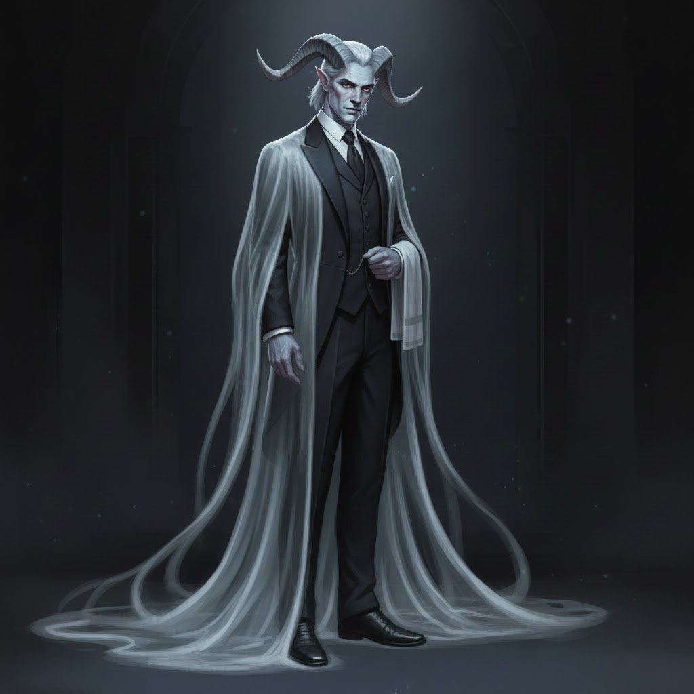
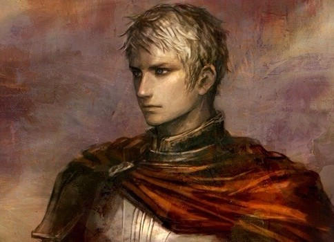
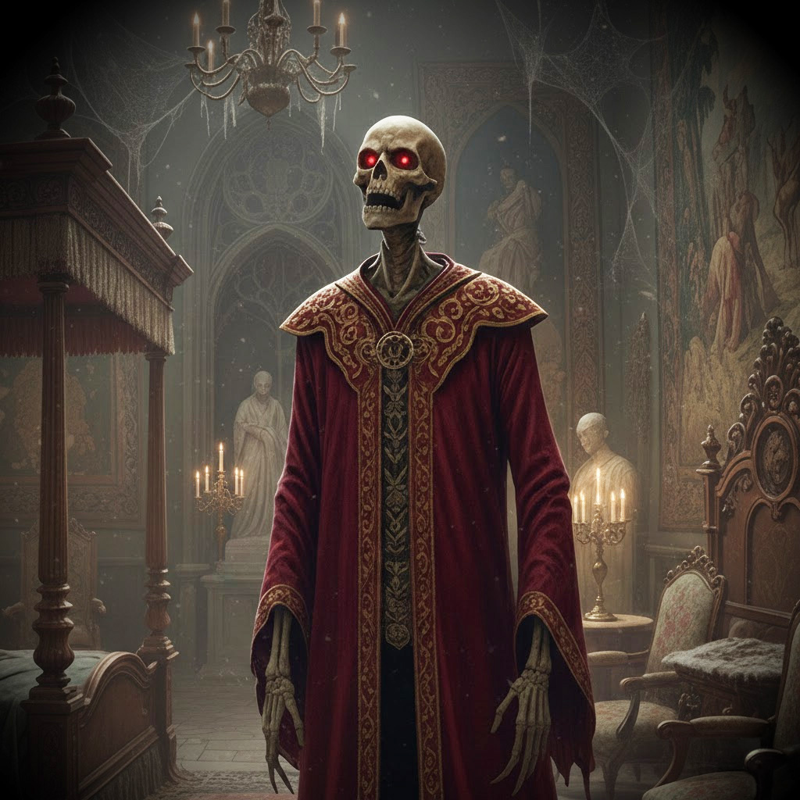
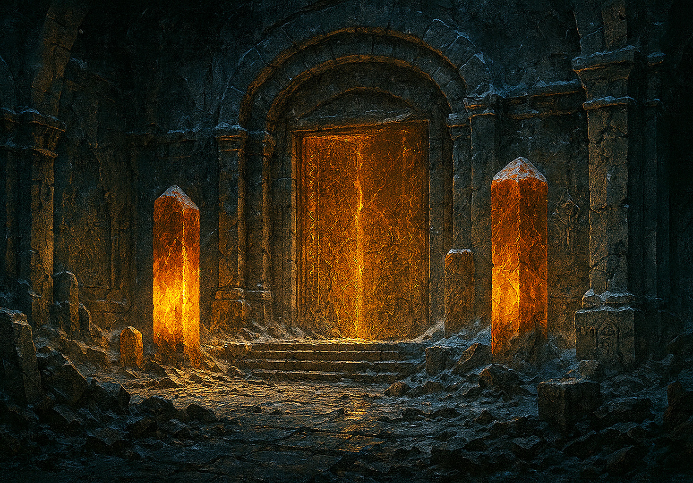
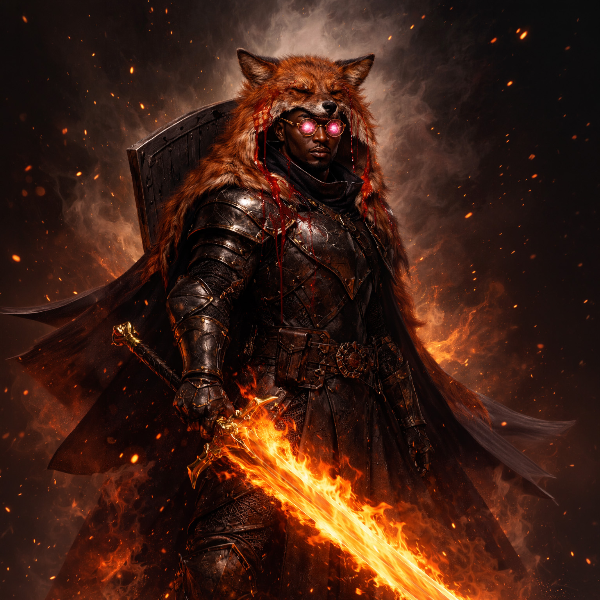
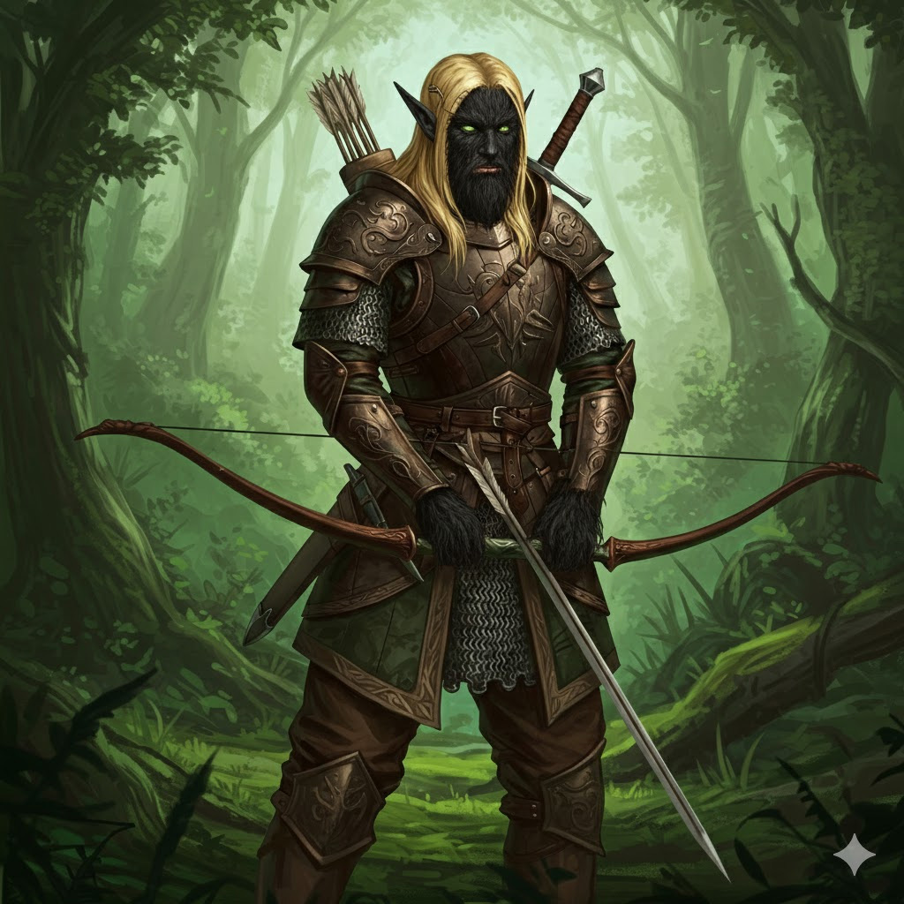
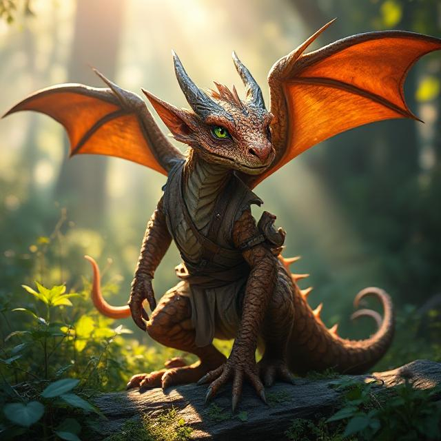
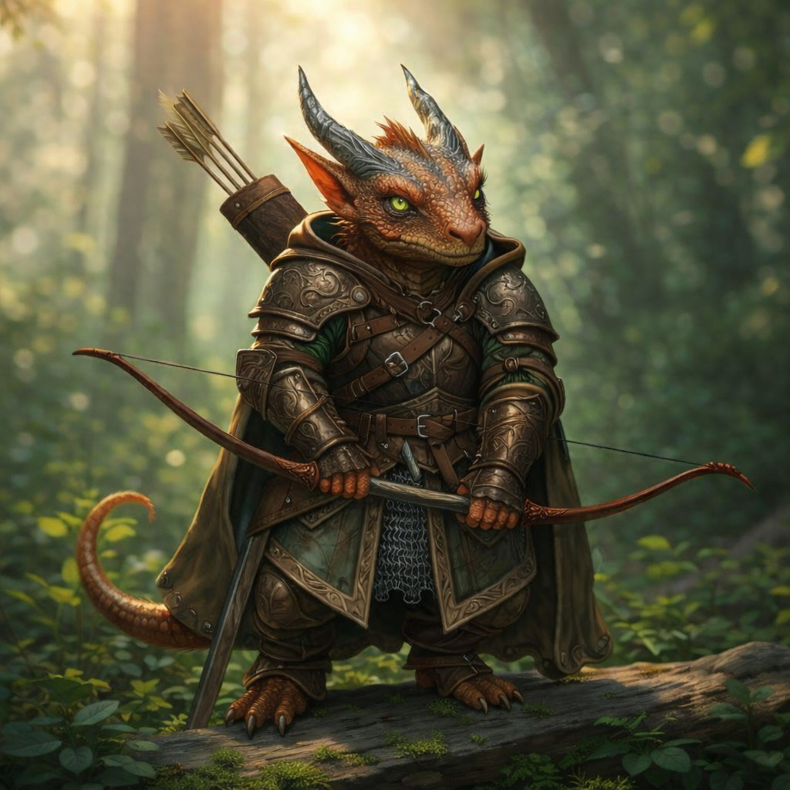

The Curse of Strahd
A History

Party Members
Active Party Members
Human | Sorcerer / Draconic Sorcery
Status - Alive, Pompous, Thinks he's cool and kind of is, Everyone calls him Dave for some reason
Human | Bard / College of Lore
Status - Alive, Frequently blocks doorways, A Noble bard trying to prove himself
Human | Warlock / The Fiend / Fighter / Eldritch Knight
Status - Alive, Likes to cleave
Phantom Tiefling | Cleric / Life Domain / Monk
Status - Alive, Eerily graceful, A long lived noble butler
Kobold | Ranger / Hunter
Status - Alive, Trained "for a lifetime" to use a longbow, Easily pleased when he does things [Therin] would do, Might be [Therin]
Elf | Paladin / Oath of Glory
Status - Alive, Likes small animals and emotive constructs
Active Followers
Rat | Familiar
Status - Alive, Drowned at one point, Resummonable, Follows [Gregor]
Crow
Status - Alive, Follows [Kael]
Cat
Status - Alive, Initially named Boots, Held by [Sylvenna]
Shield Guardian
Status - Alive, Follows [Sylvenna]
Inactive Party Members
Human | Cleric / Life Domain
Status - Dead, Vampire Spawn ([Strahd]), Old,
Human | Rogue / Thief
Status - Dead, Memory restored, Previously known as "Po", Killed by a giant amber golem while saving his friend [Gregor]
Elf | Ranger / Hunter
Status - Dead, Burned, Healed, Furry, Died many times, Sacrificed himself to an evil god
Researcher (need more details)
Status - Deceased, Betrayed, Defeated after being reanimated as a revenant
Human | Paladin / Oath of Devotion
Status - At rest (removed from the world), Thought the party incompetent, Became leader of Vallaki
Dusk Elf | Mage
Status - Dead, Hopes to save his sister's spirit from [Strahd's] influence by defeating him, Stabbed in the back by [Dave] after consuming [Madam Eva.]
Human | Mage
Status - Deceased, Body found, mouth sewn, in Castle Ravenloft
Inactive Followers
Dragon
Status - Disintegrated, Initially only partially reanimated
Construct
Status - Nonfunctional, Used to follow [Sylvenna], Carried by [Therin|Therin (Original)]
The Beginning
The party received a letter from, supposedly, Kolyan Indirovich. Later they discovered that it was written by [Strahd:]


Hail to thee of might and valor.
I, a lowly servant of Barovia, send honor to thee. We plead for thy so desperately needed assistance.
The love of my life, Ireena Kolyana, has been afflicted by an evil so deadly that even the good people of our village cannot protect her. She languishes from her wound, and I would have her saved from this menace.
There is much wealth in this community. I offer all that might be had to thee and thy fellows if thou shalt but answer my desperate plea.
Come quickly, for her time is at hand! All that I have shall be thine!
Kolyan Indirovich
Burgomaster
Barovia
The party approached the gates of Barovia:

This map was acquired later, in the Village of Barovia, noted below:

As the party traveled along the road, they found the body of a man clutching the following letter:

Hail thee of might and valor:
I, the Burgomaster of Barovia, send you honor—with despair.
My adopted daughter, the fair Ireena Kolyana, has been these past nights bitten by a vampyr. For over four hundred years, this creature has drained the life blood of my people. Now, my dear Ireena languishes and dies from an unholy wound caused by this vile beast. He has become too powerful to conquer.
So I say to you, give us up for dead and encircle this land with the symbols of good. Let holy men call upon their power that the devil may be contained within the walls of weeping Barovia. Leave our sorrows to our graves, and save the world from this evil fate of ours.
There is much wealth entrapped in this community. Return for your reward after we are all departed for a better life.
Kolyan Indirovich
Burgomaster
The Village of Barovia
The party met [Flippelbottom Tillywix] and were chased by deadly fog. They got trapped in the "Murder House", and [Sylvenna] secretly murdered [Flippelbottom] to save the party. [Strahd] taunted them as they struggled. They met [Ireena Kolyana], whom [Strahd] is interested in, and the party harassed a priest in the church -- killing his son.

Along the road to a nearby village, the party met two people, one of which, Flippelbottom Tillywix, joined them on their journey. [Po] -- Quinn before he regained his memories -- tried to pick the pocket of the other man. The man intercepted the attempt and laughed before walking away.
The party entered the Village of Barovia, chased by a destructive fog which tears at those who enter it.

Two children, [Rose] and [Thorn] Durst appeared from the fog and called out to the adventurers. They called for help, claiming that there was a monster in their house. The party followed, and the deadly fog seemed to usher the party into a building the village knew as the "Death House".

The fog closed in around the building and filled it as the party explored the house -- a house haunted by the ghosts of those who died or were slaughtered there. It looked to once house a noble family, but its owners appeared to have died long ago. The party wondered how the children who brought them here could have survived.
The party then found the bodies, and ghosts, of the two children they met outside. The ghost of the young boy possessed [Therin|Therin (Original)] temporarily, altering his personality.
As the party climbed the house, they came across a letter from [Strahd] to someone long dead:
My most pathetic servant,
I am not a messiah sent to you by the Dark Powers of this land. I have not come to lead you on a path to immortality. However many souls you have bled on your hidden altar, however many visitors you have tortured in your dungeon, know that you are not the ones who brought me to this beautiful land. You are but worms writhing in my earth.
You say that you are cursed, your fortunes spent. You abandoned love for madness, took solace in the bosom of another woman, and sired a stillborn son. Cursed by darkness? Of that I have no doubt. Save you from your wretchedness? I think not. I much prefer you as you are.
Your dread lord and master,
Strahd von Zarovich
Shortly after finding the letter, the party discovered a hidden staircase which led to an underground dungeon. [Kael|Kael (Helmet)] managed to trigger every trap and ambush within, while [Therin|Therin (Original)] enjoyed finding some gold and minor treasures.
Descending farther, they found a room leading to a flooded altar. The room contained some alcoves filled with cult-ish objects, and the altar rested behind an iron gate.
[Gregor] summoned a rat and named it [Count Cheddar.] [Gregor] controls [Count Cheddar], looking through his eyes. He had him swim through the gate, finding a lever on the other side. Unable to reach it, they were able to open it another way and, as they entered, they were met with the ghosts of cultists. These cultists demanded a sacrifice. Initially, the party refused to kill anybody. The cultists, displeased, summoned a Shambling Mound which pursued the party as they followed [Gregor] throughout the house in a panic. They would have run, but [Gregor] blocked everybody's path the whole way through.
Believing the house to still be filled with fog, the party felt trapped. Eventually, while evading the Shambling Mound, [Sylvenna] whisked Flippelbottom back down to the altar, called him a hero, then mercilessly ran him through. This appeased the cultists. [Strahd], amused, seemed to appear in the room for a moment, laughing. [Therin|Therin (Original)] took Flippelbottom's clothing -- somehow wearing it well even though Flippelbottom was half of [Therin's|Therin (Original)] height.
With the cultists' ghosts satisfied with Flippelbottom dead and the Shambling Mound gone, the party took Flippelbottom's body with them as they left the house. Finding a nearby tavern to rest in, they unceremoniously plopped Flippelbottom's unclothed body, covered in a simple cloth, in a nearby cart -- likely owned by people called the Vistani. In the tavern, [Sylvenna] spoke with some Vistani. They gave her a map of Barovia and told her to visit a woman named [Madam Eva] at the Tser Pools Encampment. The party slept haphazardly in the tavern.
In the morning, the cart in which they stowed Flippelbottom was gone. They ignored this and moved on to the house of the Burgomaster, who supposedly sent them the letter that brought them there, at the request of his son, [Ismark,] who was in the tavern. The party showed [Ismark] the letter they received from his father. [Ismark] confirmed that the letter could not have been written by his father, who was recently deceased, as the handwriting and signature did not match that of his father.

There, they found [Ireena Kolyana,] sister to Ismark. [Strahd] was interested in [Ireena,] so [Ismark] requested the help of the party in escorting her to Vallaki. During this request, [Cedric] expressed that they saw a kid getting kidnapped and didn't do anything about it. Thankfully, he expressed this in such a strange way that [Ireena] and [Ismark] dismissed the comment.
[Ireena] joined the party and asked for help transporting a coffin, containing the recently deceased Burgomaster, to the cemetery. During this interaction, the party realized that they left [Kael|Kael (Helmet)] sleeping under a table in the tavern for the whole day.

Upon visiting the church, the party heckled [a terrified priest,|Donavich] broke into the basement, and beheaded [a vampire spawn.|Doru] The vampire spawn was the son of the [priest,|Donavich] whom he kept down there since a failed raid of Castle Ravenloft.
They buried the Burgomaster behind the church, and they stayed there for the night. The church was accosted by Strahd Zombies in the dark, but the party left safely the next day.
Tser Pool Encampment
The mysterious [Madam Eva], a fortune teller, read the fortunes of the party, giving them leads that would help them defeat Strahd.
The party approached a camp of Vistani accompanied by several large horses. In a sizeable tent, they found [Madam Eva], who read their fortunes with a deck of cards:
To [Sylvenna], she said, "This is a card of power and strength. It tells of a weapon of vengeance: a sword of sunlight. I see a lonely mill on a precipice. The treasure lies within."
Status: Success -  The Sunsword was acquired.
The Sunsword was acquired.
To [Therin|Therin (Original)], she said, "This card tells of a powerful force for good and protection, a holy symbol of great hope. There is a town where all is not well. There you will find a house of corruption, and within, a dark room full of still ghosts."
Status: Success -  The Holy Symbol of Ravenkind was acquired.
The Holy Symbol of Ravenkind was acquired.
To [Gregor], she said, "This card sheds light on one who will help you greatly in the battle against darkness. Search for a troubled young man surrounded by wealth and madness. His home is his prison."
Status: Failure - [Victor Vallakovich] died needlessly in a den of vampire spawn.
To [Po], she said, "This card tells of history. Knowledge of the ancient will help you better understand your enemy. Look to the west. Find a pool blessed by the light of the white sun."
Status: Success -  The Tome of Strahd was acquired.
The Tome of Strahd was acquired.
To [Kael|Kael (Helmet)], she said, "Your enemy is a creature of darkness, whose powers are beyond mortality. This card will lead you to him! He haunts the tomb of the man he envied above all."
Status: In Progress - Where to find [Strahd?]
After this, the Vistani offered what materials they had in their carts to the party. Most of the carts had nothing, but [Po] found plenty of gold in the cart he checked.
The Old Bonegrinder & The Megaliths
The party happened upon an old windmill, tamed a [crow] discovered the disturbing activities of the three women there, and convinced a powerful Night Hag to hand them the legendary Sunsword for free. The party fled the Night Hags and discovered ancient Megaliths around an altar which cause visions of ancient cities representing the four seasons. They also received an invitation to meet with Strahd.

The party, on their way to Vallaki, found an old windmill. They saw a few crows out front, and [Kael|Kael (Helmet)] adroitly, unprompted, tamed one, naming it [Crow Baar.] Upon entering, they found a seemingly nice old lady baking meat pies. They also briefly spied her two unsightly daughters. Discovering that the meat pies were actually Dream Pastries which induce a trance, and finding evidence of disturbing activity within the windmill, the party spoke carefully with the old woman.

They discovered that this witch-like woman was in possession of the fabled Sunsword -- bane of [Strahd.] [Kael|Kael (Helmet)] remembered the importance of this weapon, remembering one of the fortunes from [Madam Eva]. Somehow, through some miracle, the party charmed the woman and simply asked for the sword. She handed it to them, realizing what happened shortly after. That enraged her, and she transformed -- revealing that she was actually a Night Hag.
The party immediately fled, afraid of the Night Hags within the Old Bonegrinder. Impossibly, they escaped with the Sunsword entirely unharmed.
As they fled, they came to a set of four megaliths. Different members of the party approached each megalith, receiving visions of faraway cities depicting the four seasons:
The Monument of Spring, representing the mountain city of Druvenlahr, is a tall, moss-covered pillar of veined granite. At its center: a harp carved atop a flowering mountain. The vines growing on the stone blossom unnaturally in its presence. Carved in Druidic & Old Dwarvish is the inscription: “She sang to the earth, and it bloomed. But nothing green grows forever.” The party member experiences the following vision: The stone hums softly beneath your feet, like the echo of a distant song. You see glimpses of a mountaintop city, dwarves and druids coaxing life from stone -- orchards carved into cliff sides, mountain goats frolicking where snow once clung. Laughter. Celebration. Then… cracks. The land splits. Screams echo through the rock. Spring fed them. But spring turned to greed. And the mountain claimed what it had given.
The monument of Summer, representing the gleaming, innovative city of Auron’Thal, is a scorched obsidian slab. The sunburst-and-anvil motif is deeply carved, but heat cracks run across the surface. The stone is warm to the touch, even in the cold air. Inscribed in the stone is can be seen, “He forged the sun, but even suns burn out.” The party member experiences the following vision: You see forges blazing with light, brighter than fire should burn -- radiant machines, flying constructs, beacons of holy flame. A city gleaming with pride, with purpose. But pride draws envy. And envy… invites darkness. One day, the fires stutter. Then one by one, they die. What was once brilliance becomes ruin -- blackened, forgotten, cold.
The monument of Autumn, representing the tranquil, ancient elven city of Velkynmere, is a smooth pillar of red-gold marble, covered in carved leaves -- many of which are cracked or faded. In the center is carved a single eye beneath drifting leaves. An inscription on the stone says, “She saw too far, and the leaves never stopped falling.” The party member experiences the following vision: The wind turns colder as you draw near. In your mind’s eye, you see an ancient elven city beneath the boughs -- tranquil, eternal, thoughtful. Seers and prophets gather beneath the trees, visions flickering in their minds. One sees the end. She cries out -- too late. Autumn comes. The leaves fall. No one hears her warning.
The monument of Winter, representing the lost, now silent city of Sai'el, is the coldest of the four. It is covered in pale frost that doesn’t melt, even under torchlight. A crescent moon is depicted in chains and floating above snowdrifts or wispy fog. The inscription in the stone reads, “They dreamed of freedom in frozen sleep. But the dream turned on them.” [Po] experiences the following vision: Cold grips your bones. You see towers of shimmering ice, rituals cast in silence, dreamers sleeping in runes of silver. Their dreams were meant to preserve them -- to escape what the mists could not reach. But something… else reached them first. One night, they all awoke. Screaming. And the screams did not stop. [Po] feels something watching him. A memory. The name of his childhood friend, Lyn, nearly spoken in his mind.
"The wind shifts. The stones fall silent. Four cities. Four falls. Four lessons carved into a land that forgets nothing. And yet you stand -- new blood in cursed soil. Will your names be carved in stone one day? Or merely whispered… like the rest?"

They left the stones, and came to an empty carriage waiting in the road led by two black horses. The door swung open as they approached. In the carriage, they found a letter addressed to them:

My friends,
Know that it is I who have brought you to this land, my home, and know that I alone can release you from it. I bid you dine at my castle so that we can meet in civilized surroundings. Your passage here will be a safe one. I await your arrival.
Your host,
Strahd von Zarovich
The party had a split opinion about this. For instance, [Cedric] was blinded by the promise of free food and saw no issue with getting in the carriage, while [Sylvenna] remembered the traumatizing experience of hearing [Strahd] laugh as she stabbed [Flippelbottom] and the light left his eyes. She believed it dangerous to stroll into Castle Ravenloft. [Po's] high sense of self preservation agreed with [Sylvenna], and [Therin|Therin (Original)] trusted the note to mean that no harm would come to them.
They decided to put off the decision for a while and move on.
Vallaki
The party visited an inn and parted ways with [Ireena.] A man named [Rictavio] offered assistance in preparing to fight [Strahd,] but the party ignored him. [Therin|Therin (Original)] was then driven mad by a large amount of "perfectly normal" ravens and got the party kicked out of the inn. [Cedric] got [Therin|Therin (Original)] locked in the stockades. [Kael|Kael (Helmet)] tried to become a good person and was told that important bones were missing from the church. The party murdered the two most prominent noble families in the town. They found the bones of the saint in the nick of time to ward off [Strahd.] [Ireena] became the leader of Vallaki by popular vote against [Cedric].

The party approached the City of Vallaki with [Ireena.] They made it through the tall wooden gates, and they visited The Blue Water Inn. They passed several ravens on the way in. [Po] tossed a coin to one of them, and they happily took it. [Therin|Therin (Original)] attempted interacting with one of the ravens, and they suddenly turned into a human and walked away. This made [Therin|Therin (Original)] intensely suspicious of all ravens he saw. During this visit to the inn, they briefly met a man named [Rictavio,] the leader of a carnival. Since the party suggested that they were against [Strahd], he suggested that they meet him at his wagon just down the road, then he left the inn.
[Therin|Therin (Original)] saw [|Szoldar][|Yevgeni] two hunters. He walked up to them to see if they had any useful information, but they weren't particularly talkative until [Therin|Therin (Original)] bought them drinks. Even then, they didn't help much. [Gregor] saw two nobility in the tavern, and he walked up to them. They asked for stories of his escapades -- to which [Gregor] excitedly recounted some heavily embellished stories from the book he was writing. Through talking with the patrons and owners, the party discovered that the Burgomaster put on a festival in town.

Parting ways with [Ireena,] the party briefly left the inn to visit with [Rictavio] before resting for the night. Meeting with [Rictavio] at his carnival wagon, they heard some unsettling sounds come from the wagon. He ushered them over to inquire about the party's intentions to fight [Strahd]. He concluded that the party was serious, despite their odd demeanor, and told them that he could be a great help in their fight. Fearing being overheard or spied upon in town, he told the party that they should meet him at his tower northwest of Vallaki. He also claimed to have a saber-tooth tiger, gesturing to his wagon, which he may release in Vallaki. They parted ways and the party returned to the inn to rest for the night.
In the morning, [Therin|Therin (Original)] decided to explore the inn before the party left. While the rest of the party enjoyed the inn and some food, [Therin|Therin (Original)] proceeded to go into the personal bedroom of the owners of the inn. He thought this to be acceptable. Invading their room, he deftly detected a secret door behind some easily moved furniture and entered it to find that he was in the loft of the attached barn behind the inn. Within, he found a veritable conspiracy of ravens surrounding the edges of the barn's second floor. They all turned their heads to look at him, as if accusing him of being somewhere he shouldn't be. [Therin|Therin (Original)] was dumbfounded at the amount of ravens, believing them all to be wereravens like the one he saw in front of the inn. Timidly, he waved and curtly bowed his head in greeting. Talking, as if to himself, he inquired as to the condition of the ravens, their mood, and what they were doing there. The ravens, which could just be ravens, gave no response. [Therin,|Therin (Original)] taking a final look around, spied a chest in the corner. Asking to see what was in the chest, again with no response, he reached for it. Upon touching the chest, the ravens all flew at him, infuriated with the invasion. With his quick reflexes, [Therin|Therin (Original)] dodges the whirling groups of ravens, even diving through one and grabbing one of the ravens as he escaped.

Immediately running down the stairs, raven in hand, he madly demanded an explanation from the innkeepers. Clearly knowing that the ravens were there, the innkeepers, Urwin Martikov and Danika Dorakova, were outraged to see that [Therin|Therin (Original)] captured one and was waving it about. Pulling a weapon from under the bar, Urwin threatened [Therin|Therin (Original)] and ordered him to let go of the raven. Surprised by the weapon, [Therin|Therin (Original)] let go of the raven, and Urwin shouted for him to get out of their inn. Therin and the party quickly left the inn, and Therin tried to coax the party to the barn in the back to show them the ravens. Cedric followed, and they were quickly driven out by the owners, who were likely checking on the ravens.
[Kael|Kael (Helmet)], realizing that he must be a better person to attune to the Sunsword, desired to proceed to the town's church. The party proceeded west and came to a procession in the road -- led by [Izek Strazni]. The party clearly saw a bystander speak out, saying something about the festival. [Izek] found this distasteful and ordered guards to chain the commoner -- having him walk behind his horse. [Cedric] combative as he is, shouted something to taunt [Izek] -- knowing the concequences. The procession stopped again and [Izek] inquired who spoke. [Cedric], suddenly afraid, pointed sheepishly at [Therin|Therin (Original)], whom [Izek] immediately had guards chain to his horse. The procession continued, [Therin|Therin (Original)] in tow, and the party followed.

Coming to the town square, the party saw, on the far side of the square, stockades filled with men, women, and children. One of the stockades had [Therin|Therin (Original)] in it, resigned to an unpleasant fate after his unsettling morning. [Gregor], concerned, walked up to a nearby commoner and asked why people were in the stockades. He was met with a smile, and told that the people who were locked up weren't smiling, or were particularly unhappy, during the festival. When inquiring as to the poor condition of the people, they responded saying that those people were left to starve. The uncanny smile of the commoner felt troubling as they spoke. Meanwhile [Po,] immediately upon entering the square, had headed toward [Therin|Therin (Original)] -- intending to pick the lock and save him from the stockades. [Gregor] looked up and saw [Po] gesture, as if in need of a distraction. [Gregor,] being a practiced noble bard, immediately took to the stage set up just behind the stockades. He began rambling about prophecies and such, luring the guards and commoners to look away from Therin. At that moment, [Rictavio's] tiger appeared behind him, and many of the guards decided to pursue it. Gregor called out, deceiving them, saying that he believed the owner of the tiger to be north of there. Several of the guards went in the direction he indicated. With the guards thinned, [Po] sneaked over to [Therin|Therin (Original)] and easily picked the lock, guiding Therin to the alleyways between the nearby buildings. The party members swiftly moved on to the church.
With all members safe, [Kael|Kael (Helmet)] went in first, met the priest, and asked him how to be a better person. The priest said something generic about not doing bad things, and [Kael|Kael (Helmet)] found it to be quite profound. The priest then expressed that a good person might help him with his current issue, then proceeded to tell [Kael|Kael (Helmet)] that the bones of the patron saint of the church and town have vanished. The priest found this particularly concerning, as the bones protect the town from [Strahd]. He explained that the bones must be found before the height of the festival tomorrow. [Kael|Kael (Helmet)] made it his personal mission to find the bones, and asked the priest where to start. He said that the boy who helped maintain the grounds, [Milivoj,] may know something.
Leaving the church, [Kael|Kael (Helmet)] told the party about the bones and [Milivoj]. [Kael,|Kael (Helmet)] [Cedric,] and [Po] saw [Milivoj] nearby and decided to speak with him. [Milivoj] made fun of the three of them to the moon and back, only to finally tell them that the bones may be at the [Coffin Maker's|Henrik] place after [Cedric] gave in and bribed him. The party did nothing with this information for the rest of the day.
As they set about the town, the party noticed a man in the shadows following them. After some time, they confronted the stranger. He said that he checks on newcomers in town to see if they're dangerous, then swiftly left. At this point, the party's curiosity about the Burgomaster led them to visit his mansion.

Arriving at the mansion, they were met by [Izek,] the personal guard of the Burgomaster, [Baron Vargas Vallakovich.] [Izek] had two mastiffs flanking him. He inquired about their business there, and [Gregor,] being a nobleman, claimed that he desired an audience with the Baron to see what the party could do to assist him in town and with the festival. [Izek] believed him, telling him to come in alone. [Gregor] requested that he be allowed to take one person with him. [Izek] agreed, and [Gregor] and [Po] entered and were led to the Baron. In the meantime, [Therin|Therin (Original)] hid in a bush, and the rest of the party sneaked around the building to infiltrate and explore the mansion.

Upon meeting the Baron, he seemed competent but deluded. He told [Gregor] that the party could help him investigate the Wachter family -- a prominent family vying for control over Vallaki. They didn't get much more information out of him, so they agreed to look into the Wachters and left the mansion. On their way out, they grabbed [Therin|Therin (Original)] from the bush. He was mumbling something about seeing an Allosaurus appear -- his life flashing before his eyes. He must have been hallucinating.
Shortly after leaving, the party was met once again by their shadow. He introduced himself as [Ernst Larnak,] and he informed the party that his master, [Lady Wachter,] invited them to dinner. This seemed quite serendipitous, so they proceeded to the Wachterhaus.


Finding the Wachterhaus, they were ushered in and led to a dining room. There, they were greeted by [Lady Fiona Wachter.] During the meal, she found them exotic, unique, and she invited them to be her allies. They inquired as to her goals if she were to be the leader, and she gave some questionable, nefarious responses. They asked for a private room to discuss this -- to which [Lady Wachter|Fiona] cordially had her waiting staff direct the party to a private joining room.
The party, now alone in the house, felt conflicted. They knew that the Burgomaster was detrimental to the town, but they had heard that the Wachters were considered morally questionable. Hoping for more time to investigate, they left the room and asked if [the Lady|Fiona] had some lodging for them -- as they were tired travellers. Desiring strong allies, [Fiona] agreed, leaving her maids to usher the party upstairs.
Nearly settled for the night, a few members of the party separately decided to quietly explore. After [Po] quietly took some noble clothing from the wardrobe in his room, [Sylvenna] and [Po] spotted each other peeking out of their doorways, and they decided to investigate a nearby room together. Peering through the doorway, they saw a library, and they were surprised to find it filled with cats! [Po] was suspicious of them, remembering the wereraven [Therin|Therin (Original)] saw that morning. However, investigating further, he concluded that they were simply cats and successfully pet one. [Sylvenna] seemed thrilled, and remembered this room for later. In the closet, or storeroom, they found a locked chest. [Sylvenna] asked if [Po] could pick the lock. He seemed confident and successfully opened the chest, but a tranquilizing dart shot from the chest, rendering him unconscious. In a panic, [Sylvenna] brefly looked at [Po's] condition, glanced through the chest, -- finding little of use to her, -- then, with great effort, dragged the lumbering 6'6", 221 lb. [Po] out of the library, back to the room, and strained to lift and flop him on the bed.
Meanwhile, [Gregor] and [Kael|Kael (Helmet)] explored the main floor, finding common noble furnishings and rooms. They also went upstairs, finding [Cedric] casually wandering, and discovered [Lady Wachter's|Fiona] room. Thankfully, she was nowhere to be found, but they found a horrid sight within. In the bed, they found a carefully preserved corpse. Disturbed by the sight, they left the room -- closing the door behind them. [Sylvenna], leaning out of a doorway, waved to them to come over -- looking worried. Entering the room, [Gregor] was shaken to see his friend, [Po,] unconscious -- hearing that he was hit by a poison dart. Tears in his eyes, the room blurring around him, he fully believed the [Po] had died. He lamented his death -- calling out for answers. As this occurs, [Po's] shirt drenched with tears, he could clearly be seen breathing. [Sylvenna] and [Kael|Kael (Helmet)] attempted to convince him that [Po] was clearly alive, believing his condition stable. [Therin|Therin (Original)] even cast a healing spell on him. [Gregor] couldn't be reached, and stayed like that for some time.
In the morning, [Po] unconscious, [Gregor] convinced, and the party rested, they found the house generally empty. [Cedric] and [Therin|Therin (Original)] led the way to the basement through a hidden door they discovered. In the firelit room, they found several re-animated dead on a sandy floor. They also caught [Lady Fiona Wachter] and several cultists performing a ritual which would, supposedly, summon a demon to the realm. Taking swift action, they quickly murder [the noblewoman|Fiona], her sons, and the cultists. They also caught [Ernst Larnak], the spy, attempting to flee, and made quick work of him. Waking up, [Po] met the rest of the party down the stairs in the entryway. Understandably confused at the scene before him, the party walked him down the stairs and showed him the additional macabre scene in the basement -- explaining that [Lady Wachter|Fiona] was part, or even leader, of a cult trying to summon a great evil. [Po] couldn't really be bothered by the scene, and he accepted the explanation. The party left the grim scene of the Wachterhaus to report their "findings" to the Burgomaster. Although, [Sylvenna] was sure to tame one of the cats from the library, name him [Boots,|Evil] and take him with her.
On their way to the mansion, they ran into [Ireena] again. [Po], still slightly drugged, and trusting [Ireena,] mumbled something about the missing bones. A flash of concern flew through her eyes, but she believed she misheard him -- attributing it to the strangeness of the party. She then parted ways with them to talk more with the townspeople.
Once again coming to the front of the mansion, all except [Gregor] decided to sneak around the sides of the house to find a different way in. [Cedric,] eyeing the cat, [Boots,|Evil] dared Sylvenna to rename him ["Evil Spongebob"] for a gold coin. Unexpectedly, she agreed. [Gregor] entered and was ushered to the Burgomaster by some of the mansion's staff. [Cedric] decided to look candidly in a window, making a terrifying face and frightening [the Baroness, Lydia Petrovna]. Considering the big red rubber glove he wore, it was a concerning sight indeed. He was quickly pulled away from the window by [Therin|Therin (Original)].
[Gregor,] in [the Baron's] office, knew that he needed to buy time for his party to explore. He began saying some convincing noble nonsense for the next ten minutes. [Sylvenna], [Po], and [Cedric] made it upstairs. [Sylvenna] and [Po] were sneaking. [Cedric] never sneaks. [Sylvenna], in a room near the office of [the Baron] -- where [Gregor] was sweating trying to think of more useless things to say, -- found a curious mirror. [Po] went on to find the attic. [Sylvenna], seeing a note near the mirror, read it. Upon reading it, a shadowy figure appeared in the mirror asking for a name. The name the mysterious figure was asking for would be assassinated. After an incredulous look incurred from [Sylvenna] giving the name [Strahd], she tried again, [Evil Spongebob] in hand, with [Baron Vargas Vallakovich]. Very murderous. The figure vanished. In the other room, a blood curdling scream was heard, not from [the Baron] who was just stabbed by a shadow, but from an aghast [Gregor] who saw this happen and did not expect it. [Therin|Therin (Original)] and [Cedric] were now together upstairs, and went to [Gregor]. Investigating the scream, [Izek] and the two mastiffs made their way up the stairs. [Cedric] saw one of the dogs, and immediately, for some reason, froze it solid with ice magic -- killing it. This caused combat to ensue between the party and [Izek]. The party then also murdered [Izek] and the other mastiff. This effectively left Vallaki leaderless without viable competition to replace them. Both of the most prominent families in Vallaki were almost entirely slaughtered by the party.
During all of this, [Po] was in the attic. He was concerned at hearing such a terrible scream from his friend [Gregor], but decided to continue his investigation. He walked through the cluttered main room, checking spare cabinets and drawers for valuable items. He happened upon a curious object: The Holy Symbol of Ravenkind. He intuited that someone like [Cedric] may be able to use it.

At the end of the room, he found a door. Opening it, he was met with the curious scene of several magically animated dolls standing motionless and a voice calling out asking who he was. Here [Po] met [Victor Vallakovich]. [Po] neatly explained that he was part of a party of adventurers helping [the Baron] with something. [Victor] was immediately interested upon hearing that an [adventurer] was in his room. Skeptical, he asks if [Po] is simply one of his father's, [the Baron's,] henchmen. [Po] refutes this, saying that they really hoped to investigate the unpleasant state of Vallaki. [Victor] believed that, intrigued. [Po] saw the skill that it would take to do what this young mage was doing -- even from the few examples in the room. [Po], seeing the discomfort of this person, -- living in an attic, -- seemed to come to the conclusion that [Victor] was dissatisfied with his life and his family. Also seeing the flash of excitement at hearing of adventure, [Po] asked [Victor] if he would like to join them on their adventure. [Victor's] posturing collapsed, and he agreed. [Victor] and [Po] went downstairs together to investigate the scream and see what [Victor's] parents would say about him joining them.
Of course, [the Baron] was just assassinated by [Sylvenna,] and [Izek] was lying dead in the hallway. Although surprised, [Victor] wasn't particularly shaken by this. He decided, since his father no longer had anything to say about his actions, that he would join the party.

Leaving the mansion with their new companion, the party realized that they were running out of time to find the bones of the saint. [Kael|Kael (Helmet)] led the way to the [coffin maker.|Henrik] The [coffin maker|Henrik] wouldn't tell the party anything, and he denied knowing anything about the bones. The party didn't like this, and stuffed him in one of his coffins -- stacking some other coffins on top to keep it closed. Rummaging through the small shop, [Kael|Kael (Helmet)] went upstairs. He opened the door to his left, and he saw a dozen vampire spawn in the dark room. He immediately closed the door, and the rest of the party were informed of this concerning situation. Believing the location of the vampire spawn to be a hint to the location of the bones, as if the spawn were guarding them, some of the party members decided to have [Victor], who had likely never been in a fight in his life, lead the way into the room. After some combat, and the vampire spawn healing after taking any damage, the vampire spawn manage to kill [Victor]. Having done nothing about this, many of the party basically just shrugged and they left his body there. [Po,] who met the kid, still had magically induced memory loss which also affected how easily he formed attachments, so he simply thought it unfortunate.
Talking through the coffin walls to the trapped [coffin maker,|Henrik] they threatened to leave him there. Before that, he was adamant that he knew nothing about the bones, but now he offered that they could pay him for the information. They released him from the coffin and paid him several gold. He proceeded to walk over to another coffin in the same room and opened it. There rested the bones. [Victor] truly died needlessly. Now every noble in the two most prominent families of Vallaki was dead.
Back at the church, the party heard some commotion starting from the front door. They opened the doors to see [Strahd] appear before a slew of commoners and [Ireena]. Truly at the last moment, they rushed through the door with the bones. [Strahd] looked at them with disdain, called them a nuisance, and vanished -- as if the bones of the saint had some effect on him while in the church. Relieved, [Ireena] looked to the party as they handed the bones to the priest. [Ireena] took them to another room to ask what was happening, and she was truly appalled, stupefied, as the party explained that, in the last day alone, they slaid every noble member of both of the most prominent families that could be capable of governing Vallaki. All but speechless, Ireena, the daughter of a Burgomaster, decided that there should be a vote for the leader of Vallaki since many of the townspeople were here. Of course, [Cedric] decided to be her opponent.
Cedric started, standing at the pulpit, and his speech consisted of:
"I have six -no I don't have six... I had six-" *begins giggling uncontrollably under his breath*
"One time... Once... One time I killed -no I can't say that..."
To which [Ireena] rebuts with an elegant speech about looking after the townspeople, actually solving problems, taking advisement from the residents, and something or other. Very nice.
After no deliberation, the townspeople voted for [Ireena.]
The party quickly left Vallaki.
Lake Zarovich & The Vistani Camp
The party saved a girl from a drunk man throwing her in a lake, they met some dangerous looking Vistani at a Vistani camp near Vallaki, and they received a reward of gold pieces.
The party decided to briefly visit the mountains to the north of Vallaki, Mount Baratok. As they travelled, they found themselves at Lake Zarovich. In the distance, they saw a man throw a large sack into the water and hold his fishing pole in wait. [Kael|Kael (Helmet)] noticed splashing and exclaimed that the man just tossed a child in the lake to drown. [Po] jumped for one of the boats on the shore and rowed furiously to the man on the lake. [Kael|Kael (Helmet)] and [Therin|Therin (Original)] were quick to chase. [Po,] upon reaching the man, dived into the lake to save the drowning child. [Kael,|Kael (Helmet)] furious with the action of the man on the water, leapt from his boat upon getting close enough and kicked the man in the head -- knocking him out and giving him the fate he doled out to the child. Shortly after, [Po] surfaced with the little girl gasping for air, and they took the two boats back to shore. They made no effort to save the man from drowning.
The girl, drenched and afraid, took a moment to calm down. She thanked them for saving her, gave her name, [Arabelle,] and asked if they could take her to her family at a nearby Vistani camp. They agreed to take her there.

Her father, [Luvash,] one of the leaders of the Vistani camp, was relieved to see her safe, thankful to the party for escorting her home. The other leader, [Arrigal,] was not so impressed, giving a bloodthirsty look toward the party, but taking no action against them. [Luvash,] hoping to reward the adventurers for their help, offered a treasure from their wagon. The party chose to take an iron chest containing 650 gp and distributed the money amongst themselves.
Mount Baratok
The party visited a part of Mount Baratok, drove off the Mad Mage of the mountain, gave no chase, then trailed off, finding some old ruins. [Cedric] made a skateboard out of stone without magic somehow, then he broke it. [Kael|Kael (Helmet)] partially managed to reanimate the bones of a dragon and had it join the party.
The party headed toward Mount Baratok. Arriving at the base of the mountains, the party was met by the [Mad Mage] of the mountain. Attempting to be cordial with him in his state seemed futile, as he screamed violently and started a fight as soon as he was spoken to. The party was doing generally well against him, since he was only one against several, so the [Mad Mage] ran away.
Instead of following the mage to what might have been his home, the party decided to climb a random peak of the mountains. There they found an old, abandoned structure, locked behind a magic to be unravled with a riddle. Answering the riddle, they found several such doors within the structure. Answering each riddle, they hoped to find some hidden treasure within. They didn't find much -- a few spare coins, a vial of reanimating powder, several beds, some barrels filled with stuff that incapacitated each party member who opened one, etc. Coming to the beds, they decided to camp there for the night.
Coming out of the structure in the morning, [Cedric] decided to take a few rocks or something and, in a flash, made an incredible skateboard out of them. Setting his new creation down, the others were quite impressed. Stepping on it, [Cedric] tried to do a kick-flip. He failed so spectacularly that his well-made skateboard basically exploded, shattering underneath him as he fell. Nearby, some ancient dragon bones could be seen -- covered in snow. [Kael,|Kael (Helmet)] deciding to use his new vial of reanimating powder, and seeing the very cool trick [Cedric] definitely pulled off, climbed on a boulder near the bones, mumbled something about wild breathing and crying kingdoms, then belly flopped on the hard ground with a clatter of metal armor, breaking the vial. In a panic, he scooped up what powder he could salvage and tossed it on the bones. Doing so partially reanimated the dragon skeleton, which he and [Cedric] named [Egon Belephant.]
Castle Ravenloft
The party dined with [Strahd] at Castle Ravenloft. He toyed with them, speaking of unwanted memories of theirs that he shouldn't know. He vanished. The party rested in the dining parlor, waking up to find a stranger amidst them. He offered his help, but lost patience with the party, leaving the room. Several gargoyles ambushed [Therin|Therin (Original)] in the entry hall and killed him. He was revived by [Cedric.] They beat the gargoyles, and found a note written by [Flippelbottom] -- who was dead. They found the body of [Victor,] his mouth sewn shut holding a scroll from [Strahd,] taunting the party again. They found a chapel, and confronted [Flippelbottom,] who had become a revenant looking for revenge. The party defeated him, and they met a small robot named [Pidlwick II] who led them safely out of the castle and joined the party.

Coming down from the isolated peak they chose to climb, [Therin|Therin (Original)] and [Cedric] convinced the rest of the party to heed Strahd's letter and visit Castle Ravenloft. They returned to the awaiting carriage east of Vallaki, and the horses, under [Strahd's] influence, took the party to Castle Ravenloft. Arriving at the castle, they took advantage of the promised "safe passage" and saw a quiet entrance with doors opening for them. Entering the dimly lit castle, they heard another set of doors open, and found a dining parlor.


Seeing a dining table filled with food, they were met by Strahd standing at the far end of the room. He invited them to sit down and eat. All sat, and the group started eating. [Po] hesitated, investigating for tampering with the food before eating any. [Cedric] eagerly slopped up all of the food in front of him. The rest, aside from [Strahd], ate normally. [Strahd], slightly amused by the scene before him, awaited the first question from the party. Some questions were tossed about, but no real information was revealed. [Strahd,] awit with the adventurers' uncouth demeanor and inane inquiries, decided to go through each person, scoffing at their past -- taunting them with knowledge he shouldn't have. This caused a quiet discomfort for most, although [Po] seemed slightly confused and concerned. He asked [Strahd] why he seemed to know so much about the others, and had so much wrong about him. [Strahd] smiled. Done playing with his toy soldiers for the time being, he vanished, leaving the party to finish their meal alone. Feeling unsettled, the evening waning, they decided to attempt to barricade the door and rest -- although the barricade consisted of only a sleeping [Po] in a dining chair.
In the morning, they woke up surprised to see [Po] moved easily out of the way of the door, waking up on the floor with the chair knocked over. How he slept through that, they did not know. A figure stood amidst them, claiming to be checking up on them, willing to answer any spare questions they hoped to ask. Groggy, the party tossed some odd chatter around. Somewhat annoyed and scornful of the poor state of the riffraff, the man walked out the door, closing it behind him.
Fully awake, the party peeked out of the door to the entry hall, seeing nothing noteworthy. [Po], hoping to explore, immediately headed for a nearby staircase. [Therin,|Therin (Original)] [Kael,|Kael (Helmet)] and [Cedric] walked out shortly after [Po]. While [Sylvenna] and [Gregor] were in the room, one of the three stooges dared one of the other three stooges to do something particularly squalid in the middle of the hallway. Needless to say, they did it. Moving on, [Gregor] and [Sylvenna] joined them in the hallway. [Therin|Therin (Original)] moved on to the main entrance, standing in the middle of the great hall. Looking around, he felt an odd sense of promnesia, or déjà vu. Secluded in the dark room, with four elaborate stone columns around him, the party grew silent. Hearing the grinding of stone on stone, he looked up in time to see several stone gargoyles, in turn, leap from the moulding above the pillars to the floor, surrounding him. In a panic, the elven bowman tried to defend against them, [Gregor] cast a shattering spell, and [Cedric] furiously tried to heal [Therin|Therin (Original)] through the stone creatures' onslaught. [Sylvenna] frantically shot her bow into the fray, missing the gargoyles and actually shooting [Therin|Therin (Original)] in the shoulder. [Po,] as he peeked in a room with bookshelves, a desk, and a man behind it, quietly closed the door to head downstairs as he heard the commotion. Even with the party working together, the gargoyles still managed to take down [Therin|Therin (Original)]. [Cedric] got him back up, only for the creatures to knock him out again. They even kill [Therin,|Therin (Original)] but [Cedric] cast a spell to revive him before it was too late. Eventually, the party defeated the gargoyles. Upon defeating the final one, it disintegrated, leaving a letter behind.
The stone was so cold when you left me there. I thought I would be devoured by roots or fangs, but no — it was silence that claimed me. A dagger. A choice. Your eyes.
I remember the altar still. Not the cellar one where I bled, no. A greater altar. Blackened by centuries, where broken glass rains pale light across the floor. The silence there is heavier, pressing down on me even now.
It calls to me. It remembers. And it waits for you, as I do.
Do you remember me, Sylvenna? Do you remember what you promised me — that I would be a hero? Or have I already slipped from your story?
Come to the altar. Come to the chapel where the light is broken. Stand before me once more, and let me see if you still remember my name.
- F.T.
[Sylvenna], upon hearing [Po] read the letter, shied away from it, shaken. She knew that the letter was written by the late [Flippelbottom Tillywix,] and the memory haunted her. Afraid of its meaning, she tried to open the front doors to the castle, but found four drakes waiting in the vestibule. Slamming it shut, the party realized that they were trapped. Each direction they tried to go, they were met with another deadly situation. During their conversation with [Strahd,] they asked about the castle, and [Strahd] mentioned a few of the castle's accoutrements. One of which was a chapel, connected to the entrance hall. The party turned toward the grand doors opposite the main entrance. Opening them, they were met with another grand, yet dimly lit hall; at the end of the hall, they saw a figure leaning against another set of doors. Getting close, in the dark, they were met with a greusome sight. The bloodied body of the young mage, [Victor Vallakovich] sat, leaning against the doors, his mouth sewn shut. [Po] strolled casually up to the body, noticing part of a scroll within his fastened mouth. Taking his knife, he carefully cut each stitch from [Victor's] cold, bruised lips, and took the paper.
How noble you are, chasing light through my darkness. You stirred Vallaki into rebellion, but its heir rots at your feet. You carried hope to Barovia, but your Flippelbottom bleeds on the altar. You speak of saving this land, and yet every step leaves another corpse in your wake.
Do you feel it yet? That weight on your shoulders? You carry no banner of heroes upon your backs. Those are monuments to your sins.
Do you not see? I need no armies, no schemes. You are my sharpened blades, my careful hands. You topple walls, you betray your own. You do my work better than my spawn ever could.
Keep walking deeper, my little heroes. Each grave you dig makes my throne grander. You are mine already — not by conquest, but by choice.
— S.
A key was sheathed within the small scroll's parchment, and [Po] inserted it into the door behind [Victor.] Turning the key, it clicked softly, [Victor's] body was moved gently to the side, and the door swung open. Through the doors they saw a large, extravagant chapel -- an altar in the center of the far end. Atop it, sat [Flippelbottom Tillywix,] dressed in the robes of a dark mage, and carrying a crooked staff. Sylvenna fell to her knees at the sight. She called out to [Flippelbottom,] claiming that he did save them, and asking for forgiveness. He scowled, responding by saying that he trusted her. He trusted her, and she betrayed him. She told him that he could be a hero, then took his life away in the same breath. Not only that, but they robbed him and tossed his body aside in the end. He asked if they gave any thought to keep the books he wrote in life, documenting his exploration and discoveries. [Sylvenna] produced them, offering them to him. He looked into her eyes, and his disdain shifted to anger. He began to cast a great spell of fire, and [Therin|Therin (Original)] pulled [Sylvenna] from its path. The party fought their short companion, calling to him to stop, to reclaim his life, but [Flippelbottom] was long dead. Now he was a revenant, determined to exact his revenge. [Gregor,] [Kael,|Kael (Helmet)] and [Po] realized this, and managed to subdue the undead, bringing him to silence once more.
The party took some time to regain their composure, but pressed on, knowing that they must escape Castle Ravenloft. Flanking the entrance of the chapel, two staircases spiraled up. All except [Po] went up one, and he went up the other. The rest went up the larger of the two stairways, climbing all the way up to the top of one of the castle's turrets. There, they had a view of the castle and its surroundings, but they found no way down. Descending, [Sylvenna] noticed that [Po] wasn't with them, and commented that she hoped he didn't run into anything dangerous, like some Strahd Zombies.
Coming back to the chapel, they saw Po running up to meet them. He exclaimed that they should be wary of the other staircase, as he ran into some Strahd Zombies on the chapel balcony! Some blank looks were exchanged amongst the party, then they decided to return to the entrance. As they were walking back, they met an unusual, jester-like construct named [Pidlwick II.] Investigating the small, puppet-like robot, they discerned that it wasn't particularly dangerous. They greeted this [construct|Pidlwick] and began asking questions about him. He responded by nodding or shaking his head -- as if he had no voice. [Therin|Therin (Original)] asked if he knew a way out of the castle, to which [Pidlwick] nodded, gesturing for them to follow him. He led the group down some stairs, but gestured for them to slow as they came to an oddly shaped hallway. He made some odd motions, and [Gregor] believed it meant for them not to step on a certain part of the floor. [Pidlwick] proceeded to step around the large square tile of the floor, and he gestured once again for the party to follow. They carefully did as [Pidlwick] did, and eventually they came to a small, dusty room with an open book. The book seemed to be an old record of visitors to the castle, and a small stairway led up to a simple door opening to the side courtyard just outside the castle. As the party left, [Sylvenna] looked at the [little construct|Pidlwick] and thanked him. She noticed that he began to shake, as if afraid to be left alone in the dark. [Therin|Therin (Original)] perceived the concern in [Sylvenna's] expression, and turned to [their small guide.] He asked two questions, the first was if he liked being here at the castle. [Pidlwick] shook his head furiously. [Therin|Therin (Original)] then asked if he was forced to remain here somehow. [Pidlwick] tilted his head, as if the thought of attempting to leave hadn't occured to him. Holding out his hand, [Therin|Therin (Original)] offered that [Pidlwick II] join them as they escaped that awful place. [The construct] slowly nodded, and grabbed the waiting hands of [Therin|Therin (Original)] and [Sylvenna] as the party left the castle safely.
Van Richten's Tower
The party found an odd tower, exploded, and [Gregor] did a funny dance to open a tower door. They hastily searched the tower, found nobody and nothing useful, then left -- passing a women as they left the area.

Seeking respite from their dreadful visit to Castle Ravenloft, the party passed through Vallaki to explore the western reaches of Barovia. As they explored, they came to an isolated tower. Out front they saw a wagon, warning people away from it. Obviously, they immediately looked inside. In an instant, half of the party was engulfed in the flames of a violent explosion, nearly dying from the impact. Highly aggravated, the party decided to call it a day and left to find a spot to rest and recuperate. Coming back to the tower in the morning, they approached the door. [Po,] highly keen to survive, stayed as far away from the tower entrance as possible -- claiming no part in exploring it. The group shrugged this off and touched the door handle. Searing sparks shot from the door, burning the three nearest party members. Frustrated and surprised, they took a breath. Having learned their lesson, the party got up and approached the door carefully.

[Gregor] saw a human figure etched in the sturdy door. The figure appeared to be imprinted on the door a few times in different poses, as if depicting them dancing. [Gregor] instantly knew what to do. Telling the group to stand back, he took off his shoes, set down his bagpipes, and started mimicking the dance of the figure on the door. The group snickered at the sight of a fat man doing yoga poses in the forest, but they were quickly impressed that the nimble movements of their bard friend actually caused the door to open. All except [Po] entered, searched the tower, found nothing useful, then exited -- closing the door behind them. About to move on, they saw a woman approaching. She eyed the exploded wagon, and she asked the party if they did this. Showing no signs of explosive wear, the party lied, saying that they just arrived and found it that way. She looked upset at losing the wagon, but moved on to enter the tower. The party watched as the woman quietly set down what she was carrying, took off her shoes, then proceeded to unabashedly perform the same poses as [Gregor] did moments before. She entered, closing the door behind her, and the party made no effort to get her attention -- afraid that the door may, once again, retaliate.
The Wizard of Wines
They approached the Wizard of Wines winery. The party was then inundated with needle blights. [Therin|Therin (Original)] died again, horrifically this time. [Cedric] revived Therin again in the nick of time. They wrested control of the winery from evil druids. [Therin|Therin (Burned)] saw the light and accepted the existence of wereravens.
Travelling farther west, the party reached an expansive vineyard, beautiful rows of grapevines spanned the surrounding area. Impressive -- even in the gloom of the ever clouded sky. In the midst of the vineyard, they saw the building known to be the Wizard of Wines Winery. Before they could properly approach the winery, a cloaked figure called out to them in a hushed tone from amidst the vines. He called them over and introduced himself as [Davian Martikov.] [Davian,] upon hearing that they were adventurers, asked the group for their help. Apparently, druids invaded his winery and drove him, his sons, and his daugher and her husband from their home. He said that they were hiding with him nearby. [Po,] although questioning the odd appearance of the man, could discern that he was telling the truth, and [Kael|Kael (Helmet)] urged the party to agree to do what they could for him and his family. They agreed, he thanked them, then he disappeared into the grapevines to wait for their attempt.

The party approached the winery. As [Po] took a step onto the wooden structure of the loading dock, the group heard a wild rustling surrounding them. In horror, they watched as a hoard of a score and a half of needle blights emerged from the surrounding vineyard and shambled, in droves, toward the winery. The party ran for it, aiming to enter the building and barricade themselves from the hoard. [Po] entered first, followed quickly by [Gregor.] The needle blights continued to march, lurching and stumbling toward the alcove afront the building. [Sylvenna] ran in an adjoining door, followed by [Cedric.] [Gregor] looked out in time to see the needle blights surrounding Therin and Kael. [Cedric] watched from the doorway as [Kael|Kael (Helmet)] and [Therin|Therin (Original)] were encircled by the creatures and began to fight. Gregor cast a ball of fire into the midst of them, taking a few of them out, but it hardly made a difference. [Kael|Kael (Helmet)] reached the doors, turning to cleave the needle blights as they approached. [Therin,|Therin (Original)] however, was not so fortunate. Leaping onto the wagon in the middle of the bay, he was swiftly cut off by needle blights left and right. In an effort to take down as many as he could, he called for [Cedric] to toss him a fire starter. Striking the barrels of wine beneath him, he lit them on fire and shoved them from the cart. Flames flooded a small area around the bay, but they weren't enough to slow the creatures' approach. Not only that, but [Therin|Therin (Original)] only managed to unload one of the flaming barrels. The other two covered the wagon in wine and the cart burst into flames. The needle blights, surrounding a wagon holding a wine-drenched, burning [Therin|Therin (Original)], began producing wooden spikes all around their bodies, as if they were about to expulse them with great force around them. [Gregor] and [Cedric] slammed their doors shut, and [Kael,|Kael (Helmet)] armored, braced for impact. A dozen needleblights, all around [Therin,|Therin (Original)] expelled wooden needles all at once, impaling him with a hundred wooden spikes. [Therin|Therin (Burned)] died, burning, and covered in bloodied needles.
[Cedric] opened the door to see his friend, dead again, in the burning cart. He glanced above him and spotted a rope coming from the crane used to hoist the barrels into the building. Knowing his time to cast a rivival spell was limited, he closed the door and ran upstairs to find it, leaving [Kael,|Kael (Helmet)] well armed as he was, to defeat each needle blight at this ad hoc choke point.
Meanwhile, Po was sneaking around the great fermenting barrels of the front room of the winery. [Gregor] joined him. Tampering with one of the barrels was one of the invading druids. [Po] looked to [Gregor,] who gave a nod, and decided to ambush the druid. He shot a crossbow bolt from the shadows, injuring and surprising the druid. He shot another, and [Gregor] called out, insulting her. The druid, unable to take an insult, -- and two skillfuly aimed crossbow bolts, -- fell to the floor, dead. They also discovered a slew of twig blights in one of the fermenting barrels, and lit them aflame. The dynamic duo then proceeded downstairs to look for more druids, unaware of how dire the situation outside was.
Above the loading dock, [Sylvenna] was attempting to communicate with a druid who she believed to have gone insane, whereas he was likely just speaking Druidic. He seemed panicked at seeing the situation below, the cart engulfed with flames. [Cedric] joined her, insulted the druid, then began to make his way around the large opening in the floor to the crane. [Sylvenna] followed. The druid, holding his staff at them, remained equidistant from them, moving as they moved. The two looked down, seeing [Therin|Therin (Burned)] lying atop the splintered wine barrels as the flames around him began to die down. [Sylvenna] was horrified at the scene. [Cedric] walked brazenly up to the druid, telling him to stop the needle blights, but the druid, speaking jibberish, panicked and started to fight [Cedric.] The druid didn't last long, and [Cedric] claimed his staff -- a Gulthias staff.
Desperate to save [Therin,|Therin (Burned)] [Sylvenna] called [Cedric] over, saying that she would lower him down with the loading winch, all the while, [Kael|Kael (Helmet)] continued to slice through blight after blight. Some of the creatures spotted the two from below and shot needles at them, barely missing them. [Cedric] hesitated, fearing that he too might become a lifeless porcupine. [Sylvenna,] frustrated at [Cedric's] reluctance, tied the rope around herself and jumped over the edge after telling [Cedric] to raise them up once she had a hold of [Therin|Therin (Burned)]. As she reached [Therin's|Therin (Burned)] body and barely managed to get the large hook around his belt, the needle blights surrounding the wagon turned to her. They attacked her, rendering her unconscious. Now, with two elves dangling from a rope, [Cedric] managed to winch them up and pull them to safety. He quickly cast a revival spell on [Therin|Therin (Burned)] and woke [Sylvenna,] and [Kael|Kael (Helmet)] was left to slice the remaining needle blights to ribbons. [Therin,|Therin (Burned)] although alive once more, was left burned, hairless, and disfigured.
With two druids dead, and the blights taken care of, [Kael|Kael (Helmet)] entered the building and [Gregor] gestured for him to join [Po] downstairs. There, they found one more druid flanked by more needle blights. [Gregor,] [Kael,|Kael (Helmet)] and [Po] made swift work of them, and they rejoined the others on the main floor.
[Therin|Therin (Burned)] and [Sylvenna] were once again safe, and [Gregor] and [Kael|Kael (Helmet)] called out to the [Martikovs.] From the distance, a group of ravens flew gracefully into the front room, and [Therin's|Therin (Burned)] eyes flew wide open as he saw each of them transform into people. The [Martikov family,] all wereravens, thanked the party for their great effort to free the winery. Once again lucid, [Therin|Therin (Burned)] greeted them and asked about wereravens, claiming to have a particular curiosity about them since he wasn't accustomed to seeing ravens turn into people. They explained a bit about themselves, and [Therin,|Therin (Burned)] a new man, came to terms with the idea of wereravens. They then offered that they would send word to their people to receive the party kindly in the future. [Therin|Therin (Burned)] thanked them for their understanding of his inquiry, and the [Martikovs] gifted the party twelve bottles of their finest wine, Champagne du le Stomp. The party then left them so they could inspect their wine for tampering from the druids.
Argynvostholt
[Egon Belephant] lead the party to an abandoned castle. They found a coffin outside with [Cedric's] name on it. [Po] saw horrific visions of lost, jumbled memories. A flame in dragon form told the party to free its knights from their wandering. They encountered and fought phantom warriors throughout the castle. They discovered the castle name to by Argynvostholt -- owned by the late, great dragon Argynvost. They met the undead commander of the forces of Argynvostholt. [Po] heard the lost voices of the people of his hometown, Sai'el. The party showed concern for [Po.] The party slept inside while [Cedric] decided to sleep in the ominous coffin with his name on it. [Cedric] was agreeably dragged away by Strahd Zombies and turned into vampire spawn. [Therin,|Therin (Original)] having memorized [Strahd's] teeth for some reason, recognized that [Cedric] was turned by [Strahd.] [Po] saw a figure in a red cloak in the castle and began to pursue them. The party followed. They were led by [Po] to the top of the castle and found the Beacon of Argynvostholt. [Po] solemnly reached for the beacon, and flames burst forth from within him -- lighting the beacon. [Po's] lost memories were restored, and he reintroduced himself as [Quinn.] The party found the rest of the castle to be still, as if lighting the beacon saved the warriors in death. They fought nine giant black spiders. [Therin|Therin (Original)] and [Gregor] thought wet wood was gold.
Realizing that they had few leads on one of the remaining fortunes, the fortune which spoke of a pool blessed by the light of the white sun, they decided that they should seek out [Rictavio] for assistance. They started toward the tower northwest of Vallaki that he indicated -- not realizing that they already visited it once before. However, on a bridge between Vallaki and the tower, [Egon Belephant] seemed to be drawn away from the path. The party, unable to stop this behemoth, followed him.

They came to an old, abandoned castle. In the center of the path leading to the entrance, they saw a majestic statue depicting a great dragon. Inspecting the statue, they noticed that it may have, long ago, had a magic mechanism within, but it seemed to work no longer. [Egon Belephant] walked up to the statue, then quietly turned to dust. Although sad to lose [Egon,] they mostly found this curious and decided to explore the structure.
Some distance away from the statue, the party eyed a coffin amidst the long grass. Inspecting it, they found that the coffin had [Cedric's] name on it. Without hesitating, he threw the coffin open, and a swarm of bats assaulted him before flying away. Most of the party found this unsettling.

Entering the doors of the old castle, they briefly saw what may have been a winged shadow pass over the dark hall. The party thought this odd and mystical, until they saw [Po.] Amidst the group, he stood, as if alone. Staring at the room around him, unbeknownst to the party, he saw the room unnaturally lit. Cracks appeared, originating at [Po's] boots as he walked, shaking, to the center of the room. He watched as the cracks climbed the marbled columns and decorated walls, seeing the walls begin to shift and stretch, vanishing into the distance. The creeping fissures led his eyes to an endless ceiling reaching into the distance where the walls should have been. [Po,] in the center of this dragon's foyer, fell to his knees, petrified. Terror filled his eyes. Hanging from the unending ceiling in an infinite, pillared room were countless dead. The bodies of people [Po] almost knew hung from chains attached to the ceiling, bathed in an unnatural and eerie, golden light.
The rest of the party saw none of this. To them, the room stayed still and silent. They saw only [Po,] motionless, his skin more ashen than it normally was, on his knees at the foot of the grand staircase. The group was afraid at this peculiar behavior, [Po] seeming so carefree most of the time. They called to him, unsure, but gained no response. [Gregor] walked in a wide berth around [Po] only to see tears streaming down his face, his complexion near-lifeless. [Gregor] leaned in closer, waving to get [Po's] attention. His haunted eyes didn't move from the ceiling above. Finally, [Gregor] reached out and touched [Po's] shoulder, asking if he was alright. [Po] turned his gaze to [Gregor,] his expression shifting to confusion and slight concern. His skin quickly regained what little color it usually had, and he glanced around the room -- the vision gone. He asked [Gregor] how he got to the center of the room, and his puzzled expression intensified as he saw the frightened faces of his fellow party members. As he stood up, [Gregor] asked what happened, or what he saw, but [Po] gave no indication that he knew what [Gregor] was talking about. Concerned, the party proceeded farther into the room. [Po] gave his usual, cheery, natural expression, although he was still slightly bewildered at the group's odd composure. As they passed him, they gave him odd looks, but they pressed no further.
The party continued on to explore the castle, and they found a den, or drawing room. Once the party fully entered the room, a fire burst forth from the hearth, taking a draconic form. Although startled, the party took no action against the flaming figure. After a moment, it hissed and spoke, saying, "My knights have fallen into darkness. Save them if you can. Show them the light they have lost!" Upon delivering its message, the flaming dragon burned out, and the room fell silent.
Continuing to traverse the castle, the party walked up the stairs. After following a nearby hallway, [Sylvenna] spotted a trap at the end of it that laid before one of the rooms. She asked [Po] to disarm it. Unfortunately, in attempting to disarm the trap, it was activated, and a magical barrier descended behind them, trapping them. From the room behind the trap, four phantom warriors appeared which the party began to fight. They successfully defeated three of them, and [Cedric's] appearance frightened one of the ghosts so much that it flew away through the castle walls -- never to be seen again.

Upon defeating the phantoms, the barrier dissipated. When leaving the hallway, another phantom appeared, although he did not seem hostile. He looked at [Po] and seemed intrigued. Speaking to [Po,] he claimed that he could see one part of seven of the soul of the Dragon Argynvost resting within [Po.] The phantom was impressed that the once corrupt soul fragment from the town lost in fog could end up here. [Po] asked what he meant, and the phantom explained that the power of the soul of Argynvost was great, even in death. It was shattered and hidden, buried in locations which were believed capable of protecting a flame of the soul. One such town was that which [Po] grew up in. The soul fragment protected there was corrupted by an evil ritual magic. The spell, however, was broken, and the soul latched on to the person who disrupted the evil magic, regaining its splendor. [Po] tilted his head, curious. The phantom, satisfied with that interaction, vanished. The curiosity of the group collectively soared.
The group decided to ascend the next stairwell. Opening the first door on the left, [Cedric] saw some phantoms sitting around a table. They looked at him with disdain, asking who disturbed them. He apologized and quickly closed the door. Looking in the next room at the end of the hall, he found a journal and handed it to [Po.]

My knights have fallen, and this land is lost. The armies of my enemy will not be stopped by sword or spell, claw or fang. Today I will die, not avenging those who have fallen, but defending that which I love—this valley, this home, and the ideals of the Order of the Silver Dragon.
The evil surrounds me. The time has come to throw off this guise and show these heathens my true fearsome form. Let it spark terror in their hearts! Let them tell their stories of dark triumph against the protector of the Balinok Mountains! Let Argynvost be remembered as a dragon of honor and valor. My one regret is that my remains will not lie in their rightful place, in the hallowed mausoleum of Argynvostholt. No doubt my bones will be scattered among my enemies like the coins of a plundered hoard, trophies of a hard-won victory.
I do not fear death. Though my body will die, my spirit will live on. Let it serve as a beacon of light against the darkness. Let it bring hope to a land wrought with despair.
Now, to battle!
Climbing over rubble from the collapsed roof, the party came to large audience chamber with a throne at the end. Sitting in the throne was the corpse of the commander of the fallen Order of the Silver Dragon, [Vladimir Horngaard.] [Kael|Kael (Helmet)] approached the throne warily. [Vladimir,] a revenant, reacted by telling the group to go away. [Kael,|Kael (Helmet)] persistent, attempted to ask [the revenant|Vladimir] for information about Argynvostholt. Annoyed, his grip on his greatsword tightened, and he said, “If you have come to destroy me, know this: I perished defending this land from evil over four centuries ago, and because of my failure, I am forever doomed. If you destroy this body, my spirit will find a new corpse to inhabit, and I will hunt you down. You cannot free me from my damnation, nor would I wish it.
"If you have come to free this land from the creature that feasts on the blood of the innocent, know this: There is no monster I hate more than Strahd von Zarovich. He slew Argynvost, broke the life of the knight I loved, and destroyed the valiant order to which I devoted my life, but Strahd has already died once. He can’t be allowed to die again. Instead, he must suffer eternally in a hell of his own creation, from which he can never escape. Whatever can be done to bring him misery and unrest, I will do, but I will destroy anyone who tries to end his torment.”
[Kael|Kael (Helmet)] prepared to ask [the commander|Vladimir] for assistance in their quest to defeat [Strahd.] [Po] saw [Kael|Kael (Helmet)] eyeing the revenant's greatsword, and he was weary of what [Vladimir] said about any who would attempt to defeat [Strahd]. He pulled [Kael|Kael (Helmet)] back, warning against bothering the undead for now. [Gregor] posed one final question to [Vladimir] and asked about the dragon that appeared on the first floor that told the party to save his knights. This seemed to offend [Vladimir,] who warned against mocking his master, the Dragon Argynvost. The party left the room, deciding to go downstairs to explore areas they missed.
As they reached the first floor, [Po] heard a familiar voice call out to him -- the voice of his childhood friend, Lyn. He had not seen her since leaving his home town which he believed to be called Sai'Sai -- always a short trip north by southwest of wherever he was. He found himself near Argynvostholt's chapel at the back of the castle. He heard the familiar sound of Lyn's Lyre playing a melody she knew which he forgot. As the Lyre plaid, names shifted in [Po's] mind. Names of places and people he thought he knew, Sai'Sai, Insidious Spring, Frisco, Old Bim, shifted and morphed into Sai'el, Sonny's Spring, Frederich Strill, Bartholomew Featherstone. Names like Anthem and Henrock, and terms like "The Scholar" and "Old Brimstone", whisped about, flickering like candlelight.
Once again, the party was confused. All they knew was that [Po] claimed to hear something and swiftly made his way to the other end of the main floor. The party followed, surprised to see [Po] pull out his well-kept lyre and play a melody he had never plaid before -- although he often plaid the lyre when he had time to rest. [Gregor] called out to [Po] again -- attempting to free him from whatever came over him. Upon hearing [Gregor's] voice, the notes he plaid became sporadic, the names floating behind his eyes melted away, and he slowly stopped plucking random notes as the melody was lost. He looked at his lyre, then looked to [Gregor,] his brow furrowed, "I thought I saw..." The thought trailed off as he looked toward the chapel doors, where he briefly saw a figure cloaked in red before coming to his senses. The experience lost to him, he gently put away his lyre -- the same lyre which once belonged to Lyn -- and apologized, again finding it difficult to recall the actions which led him there.
The party, uneasy at Argynvostholt's effects on [Po,] asked if he was alright. Clearly trembling, [Po] claimed that he was. The party decided to take a look in the chapel. Peering in, they saw three figures kneeling at the altar. [Po,] feeling oddly safe, boldly walked in. The three figures, revenants, turned, blinded by hatred, and prepared to fight the party. [Po] swiftly dashed out of the chapel behind [Kael|Kael (Helmet)] and [Gregor]. [Gregor] cast a fireball into the room. [Kael|Kael (Helmet)] saw that the columns holding the balcony were weak. He swung his weapon at one of the columns and part of the balcony colapsed, slowing the revenants. Eventually, [Gregor,] [Kael,|Kael (Helmet)] and [Po] took out the three figures with some ranged help from the others.
Tired from fighting the vengeful spirits of the Order of the Silver Dragon, the party decided to find a safe place to rest. They retreated to the servants' quarters on the first floor. [Cedric,] however, decided not to follow, and he left the castle. In the dark and the fog, [Cedric] found the coffin that had his name on it. Being old and senile, he believed the coffin to be the best place for him to rest. He laid down in it and closed the lid to sleep.
[Cedric's] night was, unsurprisingly, eventful. He woke up, feeling some movement and hearing rustling about the coffin. He easily lifted the lid to find two Strahd Zombies pulling the coffin away from the castle. Choosing to sit quietly in the coffin, he was dragged away while sitting upright in his newfound charriot. He could have easily hopped out, -- the zombies showed no interest in [Cedric] himself, -- but off he went on that bumpy ride into the night.
In the morning, the party woke up. Several minutes passed before [Kael|Kael (Helmet)] asked where [Cedric] was. The party looked around and realized that he wasn't with them in the room. [Kael|Kael (Helmet)] leapt from his resting place, concerned for the old man. He ran to the front doors of the castle. The party followed sluggishly. He opened the doors, and the party saw [Cedric] lying on the front step. [Kael|Kael (Helmet)] attempted to wake the sleeping cleric. Seeing [Cedric's] eyes open, [Kael|Kael (Helmet)] told him to come inside. As they crossed the threshold, and the party asked [Cedric] why he was outside, [Po] noticed an unpleasant thing about [Cedric.] Pulling [Gregor] aside, [Po] whispered that [Cedric] was both unusually pale, and he had what looked like the bite of a vampire on his neck. [Gregor,] clearly seeing the bite mark, froze for a moment before gesturing for everyone to huddle together without [Cedric] hearing. He told the party what [Po] noticed, and they all synhronously looked at [Cedric.] [Cedric] squinted at them, suspicious. [Therin|Therin (Burned)] approached [Cedric] and looked carefully at the bite on the neck of [squinchy eyes.|Cedric] During the party's visit to Castle Ravenloft, [Therin|Therin (Burned)] casually memorized [Strahd's] teeth for some reason. His eyes widened and he returned to the huddle. [Therin|Therin (Burned)] stated that the bite on [Cedric's] neck matched [Strahd's] teeth to the letter. Again, everyone looked at [Cedric] in tandem. This upset [Cedric,] and he demanded an explanation of the group's behavior. [Therin|Therin (Burned)] sighed, and said, "You're a vampire spawn."
[Cedric] vehemently denied this, giving no quarter. Amid his objections, the group deliberated amongst themselves trying to figure out what to do about this. Somebody remembered that vampire spawn can take control from their creator by drinking their blood. At great risk to themselves, the party decided to allow [Cedric] to remain with them and attempt to become a true vampire. [Cedric continued to deny his vampirism.]
While the group settled into that idea, [Po] glanced up the stairs. For less than a second, he saw Lyn, draped in a foreign red cloak, vanish around a corner -- the cloak billowing behind her. Instantly he dashed up the stairs, chasing after her. Aware of his current state, he decided to hide the identity of the figure he was following, and he called to the party that he saw an unknown figure in a red cloak. Full speed ahead, he reached the top of the stairs, turned the corner, and saw the flowing cloak disappear through the door to the chapel balcony. He sprinted for the door, reaching for Lyn, whom he loved. The party followed [Po,] finding it difficult to keep up with him. On the half-fallen balcony, he again saw a flash of red, now ascending a spiral stairway. He continued to pursue her. At the top of the stairs, a phantom stood angered and ready to fight. [Po] slashed furiously at the phantom, defeating him handily. He opened the door at the top, entering a tower. He looked up and down the additional winding staircase. [Gregor,] [Kael,|Kael (Helmet)] and [Sylvenna] followed closely -- out of breath. As they entered the tower, [Po] called to them, desperate, asking if any of them saw the figure in red. None of them had. He opened the opposing door, seeing another phantom, and closed it just as quickly. He looked down, seeing an empty landing above the chapel, then continued his hunt, running up the stairway.
At the top of the tower, [Po] slowed as he came to the peak. A large, empty, metal brazier waited, adamant, in the cold. [Po] stood at the periphery of the Beacon of Argynvostholt; the rest of the party finally caught up to him. They saw [Po] look singularly toward the beacon. They asked where the figure went, but [Po] shook his head. Slowly, purposefully, he reached his hand toward the beacon. As his fingers touched its surface, sparks of gold, red, and blue shot from his fingertips to the brazier, and the beacon roared to life. A cleansing light enveloped [Po,] and his mind was opened. Terrible memories flew about him, his odd accent changed, and his magically induced amnesia of fifteen years lifted. The memories he so desperately, subconsciously, hid from for so long flooded his mind. The light of the dragon flame clung to him, keeping him sane as he relived his cursed final memories of Sai'el.
The party looked in awe as [Po's] demeanor, even his stance, changed drastically while magical sparks flew from him to fill the beacon. Ultimately, after some time, he regained control. He raised his hand to his forehead, resigned for a moment.
His long-time friend [Gregor] called his name, "Po?"
In a low, southern tone, a stark contrast from his varied playful accent from before, he sighed, "Such terrible memories." [Po] stood still, raising both hands to rub his face.
[Kael|Kael (Helmet)] pried, "Memories? What memories? What did you see?"
[Gregor] was surprised by the drastic change to [Po's] voice. He called his name once again, "Po?"
"Quinn Porter. That's my real name. To think I said my name was Po for 15 years... Here's what I remember:
"It was early, the dew start'n to shine in the grass and the leaves out our window. I was young, 15 at the time, and I wasn't afraid of anything: Exploring the forest, joining the village hunts for food, and enjoyin' close relationships with the other kids in town; I thrived... except when it came to that basement. I never questioned it. I never mentioned it. It just always was, but the basement of my family home was dark. So dark, not even a candle or torch could pierce through. I was afraid of that enveloping blindness. I assumed most basements were like that. I took the occasional foray into the dark, feeling gingerly for anything I could use as a landmark to navigate. I never got too far. It felt... wrong.
"That day was one of those days, but I thought I'd try to go farther than I 'ad before. As I walked forward, I bumped into the usual fixtures. A few odd shelves, a pillar, something like food storage hanging from rods and hooks installed on the ceiling -- I assumed it was to keep rats from reachin' 'em. Brushin' past the plentiful hangin' storage, having ventured farther than I ever dared, walking through the darkness for a few minutes, my foot brushed through some thick substance, like a heavy powder. Suddenly, all the darkness, a previously permanent law of our basement, rushed up and out of the room -like it was scared. An acrid stench invaded, and, once my eyes finally adjusted to the bright light that filled the space, I saw the things I kept bumping into my whole life. Throughout the unnaturally expansive basement, there weren't six feet between one hanging body and the next... The room was filled with the dead.
"I was terrified; I couldn't move. I tried not to look, but I couldn't look away. Each body was tied up as if they'd walked into the room themselves to die, and each one was at a different state of decay. I cowered, petrified, for what seemed like hours. Out of the corner of my eye, it looked like one of the bodies' shoulders twitched, then I heard a scream come from the town above. Somehow that got me runnin'.
"Darker than the light that appeared in the basement, the sky looked closer than before. Looking around, I saw Old Brimstone sittin' out front his house like usual. I ran over, hoping to ask who screamed. When I got to him, however, it looked like he could hardly breathe. I tried to help him, but he just kept makin' wild gestures and pointin' at other houses. It was a cloudless blue this morning, but now all was gray. I ran from house to house, finding kids and parents alike, strugglin', writhin', coughin'. They were just tryin' to breathe. For hours, I heard muffled cries and exhausted, raspy screams, and it only got worse. More and more it seemed like they needed more strength to push the air through. Only the strong remained standing, and only with great effort.
"Some tried to leave the town to get away from this deadly miasma, or whatever it was that was suffocatin' people. I followed. Along the path out of town, we were met with a wall of obsidian clouds. From afar, it just looked like fog or mist, but close up it seemed as though hundreds of black stone shards whorled through the air at impossible speeds. Walking through cut those that tried as if they were strollin' through a hail o' daggers, and no matter which direction they walked, they'd come right back in, bloody. We couldn't leave. More of the strong among us collapsed on the way back to Sai'el.
"As we walked by the first houses, we started passin' our friends, our neighbors lyin' on the path through town. Each man clambering to their loved ones as they choked on nothin' -- none found breathin'. I imagine they'd have wailed in agony had they been able.
"I was coughing out o' sympathy, mostly... and fear. For some reason, I was unaffected. Maybe it's because I was the one who broke whatever spell or ritual was keepin' death at bay. I feared they'd blame me if they saw me breathin' normal while they cried tears of blood -- just from the pressure they tried to use for air.
"As the last one standing, I approached my neighbor's house. Frederich's house. I opened his door only to see him on the ground in perfect shape. Through the tears, I might 'ave laughed; it looked like he just choked on a sweet that morning, but his death hit hardest. We called him the scholar, but he just know how to make candy for the kids. Closest thing to a father I ever knew.
"To top it all, when I stumbled home, I thought I knew what to expect. I looked in every room, -- apart from that accursed basement, -- but she wasn't there. My mom vanished while our friends choked. The days followin', I searched for her. House to house, body to body. The trees of the beautiful forest surrounding Sai'el turned an ash white, as if they burned from within. The snapping of twigs turned to what felt like the crackin' of bones. The lake, Sonny's Spring, looked like it had a red hue under the dark sky. The sun sought a brighter shore to tarry, and all I saw was pale. I never found her.
"I'd like to say I left, and that that was the end of it, but the still storm at the edge of existence kept me from goin'. It wasn't just days or weeks alone -- surrounded by the dead that were seemingly preserved as if time dared not touch them yet. I counted. After one day, the whole town was dead. After two, the fog thickened, as if to hide the ground in shame. A week, I wondered if the bodies were decayin'. I was too young, and there were too many to bury. I looked along the path, but it was like they could stand right back up and brush it off. A month, no animals. The fish in the spring had died as well. I had to rummage through the silent homes in the hopes of finding stores of flour and food. I'd gathered it all by then, and it was enough for one kid to last. Three months, I finally got the hang of makin' bread instead o' wet flour. I heard what sounded like a groan from someone one night, but the dead stayed dead. Six months passed, alone for all but one day of it. I walked the main path in town again to see if the storm was still keepin' me there, but it was at the edge of town this time. I didn't know it was gettin' closer. I ran out of flour that day.
"After nearly a year of isolation, guilt, terror, and survival, the wall of clouds surrounded my house only. Watching it encroach from the porch for so long didn't make it any less terrifyin. I saw it tear at the flesh of those that touched it so long ago. I went inside, and my gaze moved toward the basement steps. I hadn't gone back down in all that time. I figured there were more bodies down there than the bodies I counted in the town... -but the walls were closin' in. As the clawing maelstrom tore through wood and stone, I stepped down, now my whole world a basement in Hell, and one last horror rent its way through me: I looked at the bodies, hangin', and saw the bodies that were up there, in the black fog. Brimstone, Freddy, even Lyn. Starin' at me through glassy eyes, lit from behind by that unnatural light. These ~were~ the town people. My town of Sai'el was executed in a single day, and the cutting mist came for me that night.
"I made my way through my friends and loved ones, and cowered in the same spot it all started. I watched, quiverin', as the slow movin' death misted through one body after the next. Leavin' sprays of blood and bone, then consumin whoever or whatever was next. The light seemed to gather with the dark, and I was left with nothin' as Lyn's body was the last consumed, starin' at me with pale eyes as they vanished in red. The walls that were closin' in met their prey, consumed me, lifted me up, then vanished. I was left standin' in the middle of a crowded city, no memory of that purgatory, as if I 'ad woken up, having gone to bed normal the night before. Somehow, names were jumbled, and directions seemed wrong, but my legs stopped shakin' eventually. I survived as "Po".
"If you ever find somethin' what can remove memories... tell me. I wanna be Po again, wonderin' what Lyn's up to, and thinkin' his town of Sai'Sai is just a short trip away."
[Quinn] stood at the edge of the flame, looking, almost expectantly at the others in the group. [Gregor] looked the most shaken. The rest accepted his story. They all proceeded to descend the tower.
Argynvostholt was quiet. No longer did phantom knights and soldiers roam. The bodies of the Order of the Silver dragon laid still. They passed the remains of [Vladimir Horngaard.] [Kael|Kael (Helmet)] lifted the enchanted greatsword of the knight commander, vowing to use it to get closer to [Strahd.] They walked by empty rooms and echoing hallways until they reached the foyer on the first floor once more. They decided to take a small amount of time to rest and internalize the events of the day.
Before leaving the castle, the party hoped to explore what few rooms remained. The nearest unexplored room was a storage room for wine. Within, the party spotted the unusual sight of a dusk elf hiding behind the empty barrels. [Sylvenna] was called over to speak with him. Reaching out, she asked for his name. With a weak voice, he shared the name [Savid.] He asked if they had any healing, and a healing potion was given to him. Grateful, he shared a few things with the party:
- Argynvost was a silver dragon that liked to assume human forms. Argynvostholt was the dragon’s home.
- In human guise, the noble dragon led a group of knights called the Order of the Silver Dragon. They gave shelter to refugees who had come to the valley to escape Strahd’s army. Strahd’s soldiers slew the dragon, destroyed the order, and sacked the mansion.
- Vistani and dusk elves avoid the mansion, believing that the dragon’s ghost haunts it.
[Savid] guardedly stepped out of the wine storage. He thanked the party, but stopped as his eyes passed over [Cedric.] Afraid, he pointed at [Cedric] and accused him of being a vampire. He warned the party of the danger of keeping the company of a vampire spawn, but they argued that they aimed to save him from his fate. At a loss for words, [Savid] walked to the exit, keeping his eye on [Cedric,] and thanked [Sylvenna] again for the healing potion. He left quickly.
Desiring to explore the final rooms of the castle, the party headed up the stairs. Earlier, [Kael|Kael (Helmet)] spotted several giant spiders in a ruined ballroom, the room open to the elements. The party happened upon the rooms above it. Opening the doors, they found that they could see through to the surrounding forest through the massive opening in the far walls.

As [Gregor,] [Sylvenna,] and [Therin|Therin (Original)] enter the first room, they see the massive black legs of a spider, three times the size of [Gregor,] reach around the collapsed floor, and two spiders appeared before them. At the same time, another two giant spiders appeared from below [Kael|Kael (Helmet)] in the neighboring room. [Quinn,] running to the entryway, saw more spiders climbing the walls of the central stairway. Somehow, the party managed to dispatch each spider, one after the other, until the ninth and final one.
Delirious from fighting so many terrifying giant spiders, [Therin|Therin (Original)] and [Gregor] entered one of the rooms again to see if they could find anything useful, and they both gave some odd looks at the wooden floor and rubble, damp from the morning fog. Both of them came to the conclusion that these piles of wood were pure gold. They believed that this would make them rich! [Gregor] tried to act natural as he left the room. Although, anybody who looked inside just saw piles of wood and stone from the ruined walls and ceiling. [Therin|Therin (Original)] slipped past everybody, trying to be sneaky, and left to go get a miscellaneous cart to shove the rubble in from above. Miraculously, he found one and got it in the ballroom beneath the broken floor. [Gregor] shoved a pile of rubble down to the cart, still seeing gold, and the cart collapsed under the weight. The rest of the party gave the duo curious glances as this progressed. [Therin,|Therin (Original)] seeing the shattered cart, told [Gregor] that they could get another one and come back later.
Believing that they finally explored the entirety of Argynvostholt, the party decided to leave and continue their adventure.
The Vistani Traders & Vallaki
The party met some travelling merchants, purchased some magical items, and [Cedric] challenged them to a 1v1 duel. He was swiftly beaten and the party was forced to run away. After this, they found [Rictavio] in Vallaki. He told them to go to Krezk. The party, at Krezk, were required to fetch [Ireena] from Vallaki. The party went back to Vallaki and told [Ireena] to come with them. She agreed.
Leaving Argynvostholt, the party stumbled across a traveling caravan of Vistani traders. They were carrying many items, both ordinary and magical. Upon entering their temporary camp, the party requested that they be allowed to purchase some of these items. The Vistani were amused by the rather eclectic group and agreed. They perused the merchants' stock and made one or two purchases, when, suddenly, [Cedric] turned to one of the three traders to make a request. He requested a one on one duel in an attempt to get all of the items. The trader, although they had little to gain, stifled a mischevious grin. They asked what they would win, and [Cedric] offered himself as the prize. Unable to contain their excitement, the trader smiled and agreed.
Immediately upon beginning the duel, the trader, seeing how [Cedric], with his pale complexion and red eyes, was obviously a vampire spawn, cast a radiant sphere around them. This radiance harmed [Cedric] consistently and stopped him from healing. [Cedric], stunned and injured, could hardly retaliate. He attempted to use his new flying sword, but it had little effect. The trader laughed as they cast more radiant spells at the vampire spawn while the rest of his party shied away from the fight. [Cedric], afraid of the overwhelming power that radiant magic had on him, began to try to run away. The trader quickly cast a holding spell on him, and began pelting the petrified vampire cleric with more radiant magic. [Gregor], seeing that [Cedric] would die without assistance, called out for the trader to wait. With their magic glowing in their hand, a wicked smile on their face, and a singular glare toward their prey, the trader asked [Gregor] how he might repay the offense of his friend. How would he resolve this when it was such a rare and enticing opportunity to fight? While they were stopped, [Cedric] was freed of his imprisonment, and he fled. [Gregor] and the rest of the party ran with him as they heard the trader asking if they would really deprive them of such a fun opportunity.
The party escaped the Vistani traders and finally returned to their attempt to find [Rictavio.] [Gregor] cast a spell allowing him to communicate over long distances. Targeting [Rictavio,] he got a response saying that [Rictavio] would meet them at the Blue Water Inn in Vallaki.
Heading to Krezk, Gregor waved to some people in fur coats atop the town wall. Greeting them, they didn't respond. He did a little jig and one of them cracked a smile. They ask who he was. Gregor immediately asked how they felt about [Strahd.] They said that they despised him. Gregor gave a sigh of relief, saying that the party hoped to defeat [Strahd]. They said that they would confer with their Burgomaster. A few odd looks were exchanged amongst the group. The people atop the wall asked if they were the group that helped [Ireena.] Therin said yes. They expressed that their Burgomaster requested that they bring [Ireena] to Kresk before they be let in. [Gregor] deliberated with the party. [Quinn] objected, saying that she was busy leading Vallaki and hiding from [Strahd] in the protected town. [Gregor] agreed, saying that [Strahd] may appear to her, calling her [Tatyana] again. He pretended to see and pet a cat, which the guards believe, then asked for the guards to bring the Burgomaster to the gate.
[Gregor] gasped, exclaiming, "El Macho!" as the Burgomaster appeared. The Burgomaster claimed that the head of the Abbey requested that the party fetch [Ireena], and that he must be faithful to this request. [Cedric] immediately walked up, saying "Hey guys, I'm the Morninglord." The Burgomaster looked with disdain at this irreverent display, in response to which, [Cedric] backed off -- the party apologized. They headed back to Vallaki, and went to the mansion of the late Burgomaster. As they walked, every guard they passed looked at them with mild disdain -- although accepting of their presense. Walking upstairs, [Gregor] swung the office door open and waved gleefully at [Ireena.] Her day ruined, she asked what they were doing there. [Gregor] tried to convince her to come with them to Krezk. [Ireena] was exasperated at this request. Knowing that they mean well, she seemed surprisingly receptive of going with them. [Therin|Therin (Original)] asked to spend the night in Vallaki. [Ireena] agreed, telling them to head to the Inn. They agreed to meet at the gates at dawn. Thankfully, the Innkeepers weren't too displeased with [Therin|Therin (Original)] any more, and the party was allowed to stay the night. In the morning, as they traveled, [Ireena] noted that the party seems to have improved since last they met.
Krezk
The party were let into Krezk and directed to visit The Abbey atop the hill. [The Abbot] told the party how to use the Holy Symbol of Ravenkind. The key words for using the symbol were "Lux Eternum!" [Cedric] tried to steal a silver spoon from a deva. Gregor's silver tongue saved all. They found the pool blessed by the light of the white sun. [Ireena] found the love of her soul, [Sergei von Zarovich (/ˈsɜːrɡeɪ/, sair-gay),] in the pond and embraced him in the water. She vanished, taken from the world, and [Strahd,] furious, cursed the pond, destroying a nearby gazebo. The Tome of Strahd was found in the rubble. The Burgomaster's son was raised from the dead, or so it seemed, by [the Abbot.] The party went back to the Abbey. [The Abbot] prepared a neatly made flesh golem named Vasilka and demanded that the group bring in Cedric, who was waiting outside. [Cedric] stumbled in, insulted [The Abbot,] then refused to escort Vasilka to [Strahd] as an offering. [The Abbot] transformed into his true form, a deva, in his fury. He threw [Quinn] around while the rest of the party missed the deva with their arrows. [Gregor] got the final hit in to defeat the celestial creature. [Strahd] appeared, tore [the Abbot's] head off with one arm, commanded [Cedric,] his vampire spawn, to destroy [Pidlwick,] then left, disappointed. Three quarters of the town, who were revived by [The Abbot,] died with him. [Gregor] hassled the grieving Burgomaster, his twice dead son in his arms, for directions.

Coming once again to the gates of Krezk, the gates opened after the guards confirmed [Ireena's] identity. They asked someone where to find the Burgomaster, and the party was directed to hike the path to the Abbey. Crossing paths with the Burgomaster, he directed them to meet with [the Abbot.] They approached the Abbey and saw a strange creature appear on the grounds. Getting closer, they observed that he seemed to be a wolf-like mongrel. His name was [Otto Belview.] After [Cedric] mocked him, and he called [Cedric] an idiot, he asked what they were doing there and who sent them. [Gregor] indicated that [Dimitri,] the Burgomaster, sent them. Passing the graves, some of the party noticed an odd tombstone in an adjoining graveyard. The tombstone was slightly larger than the others, had a sun symbol on it, and it had an indentation that seemed to be missing something. They noted that the name beneath said [Petrovna.] They asked [Otto] who the grave was for, but he didn't know.

The party decided to enter the Abbey. They saw another mongrel with bat wings and spider mandibles chained to a post. [Kael|Kael (Helmet)] asked the creature why they were chained there, but the creature seemed afraid to respond. [Gregor] slowly approached to try to coax the answer out of her. She whispered that powerful enemies were watching her -- coming for her. [Gregor] looked at the chains, seeing that she could easily be released. [Quinn] warned against it, saying that they should speak with [the Abbot] first. Walking up to the front door, [Gregor] swung it open with a "Woo!". They saw a woman near a table, and a man with a saintly presence beginning to sit with her. [Gregor] struggled with what to say to [the Abbot,] but [Quinn] stepped in, introduced them, and asked if there was a sacred pool nearby. [The Abbot] indicated that the pond at the north end of town was likely the pool they're looking for.
[The Abbot] then asked if the party had the Holy Symbol of Ravenkind, which he claimed belonged to him. [Quinn] hesitated, but [Therin|Therin (Original)] invited [Cedric] in. [The Abbot] asked for the symbol. [Cedric] reluctantly handed it to him. He raised it above his head and said "Lux Eternum!" The symbol glowed with a bright radiance, the light filling the room. [Cedric] is devestated by the light, nearing death and fleeing the building. [The Abbot] looked to [Gregor,] demanding an explanation. [Gregor] said that the group was attached to the poor fool. [The Abbot] accepted the explanation, and asked for the most holy among the group. [Kael|Kael (Helmet)] was brought forward and given the amulet. [The Abbot] told him to keep it from [Cedric] until he was healed, saying that it could be made to cast the light of the sun around it. [Kael|Kael (Helmet)] saw that the holy symbol seemed to match the gravestone they saw, and asked [the Abbot] about it. He said that, buried there, was a great enemy of Strahd.
[The Abbot] spied [Ireena] and called her an ancient soul. He said that her's was the soul of another. Before leaving, [Kael|Kael (Helmet)] asked of the chained mongrel, and [the Abbot] called her a madwoman, saying to leave her be. [Quinn] and [Kael|Kael (Helmet)] left the building. [Cedric,] seeing them, asked where his symbol was, and they gave non-answers. [Cedric] entered again and asked [the Abbot] about the symbol. [The Abbot] threatened him, saying that he could easily make him never leave. [Cedric,] afraid of the glory of the Morninglord, backed off. About to leave, he spied the silverware on the table, then tries to steal a spoon from the table and run. [The Abbot,] enraged by this dirty vampire spawn stealing from him, began to transform into his true form: a deva, a celestial being, ready to annihilate [Cedric.] [Gregor] shouts to stop, calling for unity. [Gregor,] being the master of eloquence, convinced [the Abbot] to be calm. He promised a signed copy of the adventure filled book he was writing. [The Abbot] seemed to appreciate this gesture, he returned to his previous form, and the rest of the party left safely.
[Cedric,] upset that he no longer had his symbol, confronted the party. While he was distracted with the other party members, [Kael|Kael (Helmet)] slotted it into the gravestone outside the Abbey. The clouds over Barovia parted breifly, and a ray of golden sun touched the grave. It cracked, and broke apart, revealing a ring of regeneration. [Kael|Kael (Helmet)] gave it to [Therin,|Therin (Original)] claiming it would heal him of the scars he acquired at the Wizard of Wines. [Cedric] went mad, chugging wine, but not getting drunk. Rubbing soap on a rotten fish and eating it, but still feeling hungry. He actually managed to hang himself from a nearby tree, but his neck healed in an instant. [Therin|Therin (Original)] cut the rope, and [Cedric] immediately climbed the fourty foot Abbey and jumped off. Hitting the ground, his bones crack, but he, again, healed immediately. [Quinn,] used to [Cedric's] insanity, suggested that they investigate the sacred pool [the Abbot] indicated.
Upon leaving the Abbey, they met the Burgomaster, [Dmitri,] once again. He seemed despondent and mentioned his grief at the loss of his child. He was visiting [the Abbot,] hoping for answers. [Kael|Kael (Helmet)] suggested the very same. [Dmitri] continued on his way up the winding path. The party made their way to a still, silver pool at the far end of the town. Near the pond stood a small gazebo and a statue of the Morninglord.
The party heard a soft whisper, unintelligible except to [Ireena.] Disquieted, with great concern, she began to walk briskly toward the water. [Therin|Therin (Burned)] attempted to stop her, asking what she heard. [Ireena] claimed that she heard the voice of somebody she loves. Breaking free, she neared the pool. A shape formed beneath the now rippling water's surface. A young man looked up at Ireena and called to her, using the name [Tatyana.] Tears streamed from her eyes, and she called for [Sergei,] and was pulled into the gentle pool. Her and the figure faded into the water. Suddenly, lightning cracked the sky. [Strahd's] voice thundered above, claiming [Ireena] as his own. A column of crackling, frosted lightning struck the pool in retaliation. The pool, once sacred, lost its blessing in that moment. The face of the statue of the Morninglord was scorched, and the gazebo crumbled to the ground.
[Therin,|Therin (Burned)] [Kael,|Kael (Helmet)] and [Quinn] noticed a small black box, half buried, where the Gazebo once stood. [Therin|Therin (Burned)] leapt to the box, investigating thoroughly for traps. Finally opening it, he found a curious book. Turning the cover of the book, the title read: The Tome of Strahd.
I am the Ancient. I am the Land. My beginnings are lost in the darkness of the past. I was the warrior, I was good and just. I thundered across the land like the wrath of a just god, but the war years and the killing years wore down my soul as the wind wears stone into sand.
All goodness slipped from my life. I found my youth and strength gone, and all I had left was death. My army settled in the valley of Barovia and took power over the people in the name of a just god, but with none of a god’s grace or justice.
I called for my family, long unseated from their ancient thrones, and brought them here to settle in the castle Ravenloft. They came with a younger brother of mine, Sergei. He was handsome and youthful. I hated him for both.
From the families of the valley, one spirit shone above all others. A rare beauty, who was called “perfection,” “joy,” and “treasure.” Her name was Tatyana, and I longed for her to be mine.
I loved her with all my heart. I loved her for her youth. I loved her for her joy. But she spurned me! “Old One” was my name to her—“elder” and “brother” also. Her heart went to Sergei. They were betrothed. The date was set.
With words she called me “brother,” but when I looked into her eyes they reflected another name: “death.” It was the death of the aged that she saw in me. She loved her youth and enjoyed it. But I had squandered mine. The death she saw in me turned her from me. And so I came to hate death—my death. My hate is very strong. I would not be called “death” so soon. I made a pact with death, a pact of blood. On the day of the wedding, I killed Sergei, my brother. My pact was sealed with his blood.
I found Tatyana weeping in the garden east of the chapel. She fled from me. She would not let me explain, and a great anger swelled within me. She had to understand the pact I made for her. I pursued her. Finally, in despair, she flung herself from the walls of Ravenloft, and I watched everything I ever wanted fall from my grasp forever.
It was a thousand feet through the mists. No trace of her was ever found. Not even I know her final fate. Arrows from the castle guards pierced me to my soul, but I did not die. Nor did I live. I became undead, forever.
I have studied much since then. “Vampyr” is my new name. I still lust for life and youth, and I curse the living that took them from me. Even the sun is against me. It is the sun and its light I fear the most, but little else can harm me now. Even a stake through my heart does not kill me, though it holds me from movement. But the sword, that cursed sword that Sergei brought! I must dispose of that awful tool! I fear and hate it as much as the sun.
I have often hunted for Tatyana. I have even felt her within my grasp, but she escapes. She taunts me! She taunts me! What will it take to bend her love to me? I now reside far below Ravenloft. I live among the dead and sleep beneath the very stones of this hollow castle of despair. I shall seal shut the walls of the stairs that none may disturb me.
The townspeople, reacting to the thundrous sky, crowded the path to the pool. The began to mourn the ruined shrine near the pool. [Dmitri] followed, a changed man from when the party met him last. A young boy, [Ilya,] was with him. He tried to calm the crowd, and he called for no one to blame the party members. Suspicion, confusion, and curious glances thread their way through the crowd, and all return to their homes, locking their doors and covering their windows. [Dmitri] calls to the party, telling them to visit his home before night falls.
The party arrived at the Burgomaster's home. The recently grief-stricken [Burgomaster|Dmitri] and his wife, [Anna,] acted sporadically as they hurried to prepare a dining table. Their son, that the party heard was dead, sat quietly in the room. [Anna] stuttered in greeting the party. [Sylvenna] walked over to [Anna] and noticed that she seemed almost horrified, terrified of something. Regaining some composure, she turned to continue cooking. [Gregor] walked over, attempting to pry further. She rebuked his attempt and waved him away. [Gregor] pressed on, attempting to persuade her to speak. She waved him away once more.
[Dmitri] called to the group to sit. The young boy [Ilya] moved silently, sat, and gave an almost practiced smile. [Anna] nearly recoiled as he sat next to her. [Ilya's] voice was cold, almost unfeeling. The party proceeded to partake of the stew prepared for them. [Sylvenna] noticed more odd behavior between [Anna] and her son [Ilya.] Looking at [Ilya,] [Therin|Therin (Burned)] and [Cedric] noticed a slowness to him. [Kael|Kael (Helmet)] whispers to [Quinn,] indicating that [Ilya] was quite strange. [Quinn] spoke out to [Dmitri,] asking about his visit to [the Abbot.] He claimed that [the Abbot] performed a great miracle, and revived his son. He claimed that more than just his son was revived. He called them the Returned. [Kael|Kael (Helmet)] asked about the Returned, and the [Burgomaster|Dmitri] claimed that nearly three quarters of the towns residents were Returned.
[Dmitri] told of the history of Krezk. He mentioned the leader, [the lady Saint Markovia,] [Strahd] claiming the lands of Barovia, and a lost battle of the couragous against him. Strahd terrorized the town, but [the Abbot] arrived on wings from the sky. [Dmitri] claimed that he blessed the town and revived its residents at times. The party was at a loss, and they finished the meal quietly.
In the night, [Cedric] woke up to find young [Ilya] staring at him in the dark. [Ilya] quickly backed down the hall as the party awoke and gathered in the sitting room nearby. The spoke briefly in the night, saying that they should visit [the Abbot] once again in the morning. [Quinn,] having seen [Ilya] briefly in the hallway, claimed that following the young boy may provide some information. The boy stared at [Quinn] with glassy eyes as he approached. [Quinn] waved and reached out to [Ilya] with no response. He approached and took out a deck of playing cards to show the kid -- still met with naught but a vacant stare. [Quinn] asked if he was alright, and [Ilya] responded with a simple affirmation. He asked what he remembered about the day, how it was, but [Ilya] responded again with only an affirmation of the day going well. Taking one last look at the kid, [Quinn] noticed an odd magic at work about [Ilya,] as if some foreign spell or presence was hanging about him. [Quinn,] backing away, offered that [Ilya] seek the party if he needed help.
As the party returned to bed, [Kael|Kael (Helmet)] briefly took [Quinn] aside to give him the Holy Symbol of Ravenkind. [Quinn] questioned if he could attune to the Holy symbol. Failing to do so, he mentioned this to [Kael|Kael (Helmet)] in the morning.
In the morning, [Dmitri] asked the party to visit [the Abbot] to see if there were any ill effects of [Strahd's] lightning, and the party left [Dmitri's] home. On their way to the Abbey, the party noticed [Ilya] following them. [Therin|Therin (Original)] approached him to ask what he was doing. After an unsettling conversation, [Ilya] said something about the Morninglord giving him a new purpose. [Cedric] immediately pretended to be the Morninglord, but [Ilya] didn't believe him. [Ilya] then said that he would let the party go if they were on their way to the Abbey.
Approaching the building on the hilltop, [Cedric] and [Quinn] showed trepidation in visiting [the Abbot,] but [Kael|Kael (Helmet)] convinced [Quinn] to tag along. Inside, [the Abbot] greeted them jovially and gestured to the body of a woman deftly cobbled together. [The Abbot] gestured to her, giving the name [Vasilka.] He looked to the party and elicitted that they take [Vasilka] to [Strahd.] He stated that doing so could redeem [Strahd] by allowing him to find a new love. He believed this to be the case since the soul of [Tatyana] was taken. The party showed great hesitation, and [The Abbot] required that they retrieve [Cedric]. The party left to retrieve [Cedric], and, upon returning, [the Abbot] discovered his incompetence. This infuriated him. With the wave of his hand, undead creatures barricaded the door.[The Abbot,] gone mad, transformed into his true form -- a deva.

The party was thrown into combat. Arrows flew around; most of them missed. [The deva] threw [Quinn] around. [Kael|Kael (Helmet)] wailed on [the deva,] and [Gregor] got the last hit in to defeat him. Before [the deva] died, [Strahd] appeared. With one motion, [Strahd] ripped off the head of [the deva.] He then commanded [Cedric] to destroy [Pidlwick.] He laughed, then left. [Sylvenna] was devestated.
[Quinn] immediately left the building. [Cedric] regained his senses and tried to turn [Pidlwick] into lincoln logs, but failed. [Gregor] noticed that [Vasilka] now sat lifelessly at the table. [Therin|Therin (Original)] gathered [Pidlwick's] body, and told [Gregor] that he believed that the rest of the revived townsfolk may also be dead. [Cedric,] despite the terrible things he did under [Strahd's] control, healed the party. Before leaving, [Cedric] finally got the silver spoons he wanted, and [Quinn] gathered the rest to form a fine silverware set.
Returning to the town, the party saw [Dmitri] kneeling on the path. He clutched his son, dead again, and directed the party to look at the surrounding houses. The group saw body after body, and the townspeople mourning. Some reacted oddly, and the party knew not whether they thought this good or bad. [Gregor,] speaking in a loud voice, persuaded the townspeople that [the Abbot] was an evil being, and the people disperse -- believing him. Wondering what to do next, [Kael|Kael (Helmet)] tried to speak to his Sunsword, asking where [Sergei] was buried. It gave no response. [Gregor] walked up to the grieving [Dmitri] and asked if he knew how to find this tomb. Surprisingly, he remembered [Sergei] and his once bride, [Tatyana.] He believed he remembered a crypt below Castle Ravenloft, but he did not know if [Sergei] was entombed there. [Sylvenna] stared angrily at [Cedric,] saying that [Pidlwick] could have helped them find what they were looking for.
Looking at the map, the party discovered that there were more places in Barovia that they could visit. [Gregor] approached [Dmitri] once more to ask if he knew of the places he pointed to on the map. [Dmitri] named Yester Hill, The Ruins of Berez, and Tsolenka Pass before picking up his son and walking away into the fog.
Tsolenka Pass
The group came to a large bridge near Mount Ghakis. [Therin|Therin (Original)] passed through some green flames using the power of the Holy Symbol of Ravenkind, and the rest of the party followed. The group was once again ambushed by stone creatures from above, but they beat the creatures. They continued on to the mountain pass, stole some clothing from some dead people, and [Kael|Kael (Helmet)] made [Therin|Therin (Original)] do something twice in a row.
The party left Kresk and approached the great gate on the steep Tsolenka Pass. Approaching the portcullis, it opened, and the party saw a wall of green flames at the far end of the structure. [Therin|Therin (Original)] noticed a glow coming from [Quinn's] pack. [Quinn,] knowing that it was from the Holy Symbol of Ravenkind, slipped it to [Therin|Therin (Original)] and pushed him toward the open gate. Approaching the flames, [Therin|Therin (Original)] found that they did not burn him. The party, seeing that he passed through the flames safely, followed. The gate began to close as the party passed through, Gregor hit his head on it as he tried to dive beneath it, but everybody made it. Upon passing through the fire, [Therin|Therin (Original)] noticed the spine chilling sound of grinding stone falling from above, and the two great statues leapt from the structure, revealing themselves to be vrocks.

[Kael|Kael (Helmet)] made some guttural noises at them, they seemed surprised, made some guttural noises back, then began to attack the group. [Quinn] dashed away from the massive creatures, and the vrocks screeched at the party. The group looked at the screeching vrock, expecting something to happen, and the vrock looked confused -- wondering how they withstood the force of the scream. After a few missed arrows from [Sylvenna,] some slashes from [Kael,|Kael (Helmet)] and some good long-shots from [Quinn,] [Kael|Kael (Helmet)] managed to shove one off of the steep cliff, and [Quinn] finished off the other one.
Moving swiftly forward, they passed through the gate on the other side of the bridge. The party continued on to walk Tsolenka Pass, a path that carved its way around Mount Ghakis. As they walked a few miles in the colder than freezing temperatures, they spotted skeletons, warmly clothed, buried in snow, of travelers who met an ill fate along it. They quickly salvaged and donned the clothing -- protecting themselves from the deadly cold. Looking about, [Kael|Kael (Helmet)] spied [Therin|Therin (Original)] acting a bit more jumpy than usual -- probably because of the recent ambush of stone creatures from above again. Sneakly, [Kael|Kael (Helmet)] found an opportunity to sneak up behind [Therin|Therin (Original)] and frighten him, making him do what he did in the entrance hall of Castle Ravenloft! You know what he did. [Kael|Kael (Helmet)] thought this so funny, that he cast a spell to make [Therin|Therin (Original)] exacerbate the problem -- filling his pants even more. As [Therin|Therin (Original)] cleaned up and [Kael|Kael (Helmet)] continued to laugh, the party looked ahead to see a fork in the path. Eventually reaching it, they decided to proceed to the north.
The Amber Temple
The party ventured into the mountians, snow filling their footsteps. They met a man named [Kasimir,] who joined them briefly. Coming to the Amber Temple, the party fought their way in. [Kasimir] went deeper into the temple during the night. The group awoke, fought some flaming skulls, a bunch of them slipped on some "cleverly" placed ice. [Sylvenna], [Quinn,] and [Kael|Kael (Helmet)] were all ambushed as [Cedric] taunted a powerful wizard and got a face full of Finger of Death, dying forthwith -- pulled down to the Nine Hells. [Quinn] was injured by specters. [Kael] ran in, pursued by an Amber Golem. The party scattered, but the golem crushed [Gregor]. [Quinn] ran back in, and, although injured, helped his friend to his feet before attempting to flee. [Gregor] got away, but [Quinn] was caught by the golem and crushed. [Gregor] was devestated. In the morning, [Sebastian], a Phantom Tiefling and butler, appeared, joining them. [Dave] appeared with a princely demeanor and claimed to be the only key to their success. [Sebastian] found where they hid [Quinn's] body, cleaned him up, magically preserved his body, and hid him again. They ran into a terrified wizard, [Vilnius], and the party faced and defeated the Amber Golem. [Vilnius] lead [Therin|Therin (Original)] to find his master's staff, and [Therin|Therin (Original)] went mad desiring power. [Dave] and [Sebastian] calmed him. [Vilnius] claimed the staff and left. [Sebastian] mended [Pidlwick's] body for [Therin|Therin (Original)], unable to reanimate him. The party found sarcophagi which offered evil gifts and claimed them. They reunited with [Kasimir] in a library. They found a lich with damaged memory, and [Sebastian] observed its traumatizing memories of the temple's ruin. [Gregor] almost successfully romanced an evil fox mage, [Therin|Therin (Original)] basically died three times, and [Kael] skinned the fox and wore its bloody pelt. They found more sarcophagi, and [Therin|Therin (Original)], [Kael], and [Dave] acquired as many dark gifts as they could. Four Nothics told [Therin] where to sacrifice somebody for power. The party fought an Amber Golem in a room filled with useless "treasure". The golem shot lasers from its eyes at [Gregor]. The party found a hidden altar room calling for a sacrifice. [Therin] got naked, sacrificed himself, and three reincarnations of his naked elf body appeared as his soul was consumed by an evil god. The party left the temple, buried their friends, and saw [Strahd] standing before them. He taunted them, laughed as he threw [Madam Eva's] corpse to [Kasimir] who ate it as [Dave] stabbed [him|Kasimir] repeatedly in the back. [Strahd] vanished. Leaving the temple, the party discovered a Kobold named [Sssserin] dressed in the over-sized clothing of [Therin]. The party seemed particularly confused as [Sssserin] spoke as [Therin,] but they followed him on to the Ruins of Berez nonetheless.
The party continued until the road ended, fading into the snow. In the distance, they could barely make out the shape of a grand structure, etched into the mountainside. Standing near the end of the path, a dusk elf called out to the adventurers. The party approached him, and he introduced himself as [Kasimir Velikov,] as they spoke, he revealed that he dwelt in Barovia before [Strahd.] He claimed that his sister's death was related to [Strahd,] and that her soul was now tormented, trapped in Barovia with all the rest who have died since the mists rose. He mentioned that he heard from somewhere that there was something in the Amber Temple that could help him kill [Strahd.] The party thought this to be quite serendipitous, and they agreed to help him traverse the temple and defeat [Strahd.] [Kasimir] agreed and joined the party.

The group, with their newfound member, walked toward the massive entrance to the temple. This grand front was flanked by several giant statues carved from amber -- each one a hooded figure with their hands pressed together in prayer. Next to the entrance, before they proceeded through the tall archway, they noticed a fissure in the mountainside. The entrance was narrow, and the party could see light within. Coming closer, they heard human voices, and discerned that the people within were hostile. [Gregor,] enticed by the notion of a thin gap to block, attempted to squeeze through, but briefly got stuck and had to retreat, not before casting a shattering spell through the opening. This surprised the people within, mostly berzerkers, and combat ensued. [Kael|Kael (Helmet)], although in full armor, managed to triple-A that crack and sidle through. While he managed to bottleneck some of the berzerkers, he was swiftly knocked down, and a few escaped the temple room through the fissure. [Kasimir] swiftly cast a fireball at the few who escaped, and [Kael|Kael (Helmet)] managed to stand and defeat the rest.
The party thought it worthwhile to rest in the room that the hostile group resided in. During their rest [Kasimir] quietly left during the night to delve deeper into the Amber Temple -- saying a brief farewell to those awake. [Sylvenna] also heard whispers telling her that she must take initiative to save one she loves before she loses another.

[Kael,|Kael (Helmet)] in the morning, entered the primary chamber of the Temple. The group spied some arrow slits in the walls, and [Kael|Kael (Helmet)] went to investigate. Upon entering the side room, combat erupted with three flaming skulls. [Kael|Kael (Helmet)] immediately shoved one through one of the slits in the wall, and each of the skulls cast a fireball at the nearest party member.
Each skull spewed endless flames at the party, several arrows flew about -- missing their mark. [Therin|Therin (Original)] cast a water spell to attempt to put out the flames, but the magical fire was persistent. [Quinn] dashed toward [Kael,|Kael (Helmet)] finding [Cedric] still sound asleep in the other room. He lightly kicked him as he kept running to wake him, and moved on to help [Kael.|Kael (Helmet)] [Quinn] saw [Kael|Kael (Helmet)] cleave one of the skulls into a million pieces -- [Kael|Kael (Helmet)] counting each piece. [Cedric,] groggy, walked up to the nearest doorway with his usual swagger. The door filled with flames, he attempted to banish the infernal creature he saw before him. Unfortunately, it was just fire, so nothing happened. Flames continued to erupt from the skulls. [Gregor,] in true Gregor-fashion, whispered sweet nothings to the skull next to him. The flaming skull whispered something back before dissintegrating. With a few good swings from [Kael|Kael (Helmet)] and [Quinn,] the other skull was also defeated.
Due to the water spell he cast, [Therin|Therin (Original)] also fell. -down the stairs, as the water he made turned to ice during the battle. [Cedric] saw him fall, and attempted to kickflip on his stone skateboard down the stairs to land on [Therin.|Therin (Original)] Instead of influcting further damage on the fallen elf, he flopped just as hillariously down the stairs.
[Kael|Kael (Helmet)] believed that more skulls my be a danger to the party, and proceeded to the other side of the temple. Upon passing the center of the room, flames came from the great central statue at the far end of the Temple room. [Kael|Kael (Helmet)] dashed away, and [Quinn] sprinted back the way they came. Unfortunately, he slipped on the ice that [Therin|Therin (Original)] slipped on earlier and slid into the wall. Another flame shot from the statue and dessimated [Cedric's] skateboard right in front of him -- shattering it into a million pieces, Cedric counted.
[Sylvenna] heard [Quinn] bump into the wall as he slid on the ice. Seeing if he was alright, he coughed out something about flames coming from the central statue. She tried to drag him in the room, but, instead, she slipped on the ice herself! [Therin|Therin (Original)] helped her up, and [Quinn] treaded carefully into the room. [Cedric,] at the bottom of the stairs, decided to have a western stand-off with the statue that just destroyed his skateboard. Upon charging the massive statue with a mace, he vanished -- banished.
Nobody noticed.
As the temple quieted, [Therin|Therin (Original)] and [Quinn] looked through the arrow slits to see where [Cedric] was, but they only saw an empty room. This was only slightly concerning. [Sylvenna] and [Quinn] entered the far room of the hallway -- drawn by the wonderous smells of meat, gravy, and delicious food. They noticed a peculiar ewer atop the table. As they approached, their hands passed through the chairs and food, as if it wasn't there. [Quinn] backed away as [Sylvenna] reached for the ornate, jade-colored jug, but she touched it before he thought to protest.
 Upon disturbing the ewer, the doors slammed shut, and specters appeared to flood the room. They were surrounded.
Upon disturbing the ewer, the doors slammed shut, and specters appeared to flood the room. They were surrounded.
At the same time, Kael opened a matching door on the other side of the temple, and he was met with the glare of a large, cracked, amber statue of a man with the head of an eagle. It clenched its fist, and began to pursue him.
Meanwhile, Cedric returned from his temporary banishment. With purpose, he swiftly glided around to the back of the statue. Upon reaching the wall, a dimension door appeared, and an old wizard stepped out. He told [Cedric] that he had only a few words to convince him that he shouldn't kill him in an instant. [Cedric,] with help from his erratic God of Knowledge, believed the wizard's name to be [Heinrich.]
[Cedric] proceeded to say, "Your name's Heinrich? I'm gonna kill you!"
The old wizard, [Heinrich,] cast a lethal glare toward [Cedric,] proceeded to point at him, and chanted, "Finger of Death."
Cedric promptly died. Although, before he lost all his life, he stood, legs shaking, and, one last time, did a backflip straight to Hell. Literally. As he landed his final backflip, shadowed hands and burning flames reached up from the ground and dragged him to the Nine Hells.
In the nearby hallway, unaware of [Cedric's] death, [Therin|Therin (Original)] and [Gregor] wondered why the nearby doors slammed on [Sylvenna] and [Quinn]. Also unknown to them, [Sylvenna] and [Quinn's] lives were being drained away by the specters that appeared in the locked room. [Therin|Therin (Original)] tried to open the doors, but failed with his "weak spaghetti noodle arms." (The DM's words). He looked at [Gregor] who promptly ripped the massive amber doors off of their hinges with a primal roar! After which, [Gregor] ran in and summoned lightning to destroy three of the eight undead. [Sylvenna] swiftly cast a ray of divine light at two of the specters -- defeating one of them. [Therin,|Therin (Original)] dumbfounded at [Gregor's] raw strength, picked his jaw up from the floor (figuratively), then shot his longbow at one of the specters. [Quinn,] unable to get the hang of magic yet, struggled against the ghosts -- nearing death. Finally, [Gregor] burst the final dregs down with more lightning magic.

As the final specters dissipated, [Therin|Therin (Original)] and [Quinn] saw [Kael|Kael (Helmet)] dashing toward them with a giant amber golem pursuing him. [Quinn] saw it, shot a crossbow bolt at it, then ran, afraid. [Kael|Kael (Helmet)] ran into the room past everybody. [Gregor] caught the attention of the golem as everyone else attempted to escape out the back door to the main chamber. [Sylvenna] hid in a closet. [Kael|Kael (Helmet)] shouted that it would leave if it lost sight of you, then he jumped off of the balcony into the massive central chamber where [Cedric] died.
As [Quinn] took one last look toward [Gregor,] he saw the great golem Hulk smash [Gregor] into the ground a few times. Despite his intense sense of self preservation, [Gregor] was [Quinn's] only friend for over a decade since he became [Po] -- helping [Po] out of a life of crime and leading him toward Bounty Hunting. In desperation, [Quinn] dashed back into the room, leapt over the table, and helped [Gregor] up. [Quinn] rushed back toward the exit as [Gregor] crawled under the table. In an instant, the amber golem's gaze locked onto [Quinn] and closed the gap between it and him. [Gregor] tried to call out to the golem as he escaped the room, to distract it, but the golem's gaze turned swiftly back to [Quinn] as [Gregor] left its sight. [Quinn,] weakened by the specters, was crushed by the golem with one swing of its fists.
In his final act, [Quinn] stood, shaking. He dramatically timed his Glamoured Studded Armor's cosmetic change to become the noble garb of a King, reached up to the golem, who bent down to him, stroked its face, -- as if wiping away its non-existent tears, -- and said "I forgive you." [Quinn] crumbled on the floor, dead.
Therin was 10 feet from [Quinn] at the time of his death, but feared the golem too much to help him up. Upon hearing the golem rush away, he called out for [Cedric] in the hopes that he could revive [Quinn] before his minute was up. Others left their hiding places. [Gregor] saw [Quinn's] lifeless body and rushed back to him, kneeling at his side. He too called out for [Cedric,] but [Cedric] could not hear them in Hell. [Therin|Therin (Original)] ran out to the main chamber to look for him, but saw his skateboard, counting the million pieces it was in, and he knew that [Cedric] would never in his life have left his skateboard behind.
[Gregor,] at [Quinn's] side, tried chest compressions, but blood shot from the mouth of [Quinn] -- no life remained. [Gregor] wept as he carried his friend toward the safest room they passed, and the party rested. [Gregor] wrote furiously in his journal. They grieved their losses.
Upon waking up, they took [Quinn's] body and hid it under some sleeping mats in the corner of the room. Opening the door to the hallway, they discovered the three flameskulls they fought before, returned. They noticed the body of a man laying on the floor, the same as the day before, burned by the skulls. They quickly closed that door and opened the door leading to the main temple chamber.

Looking out, they saw a refined gentleman with pale-blue, slightly translucent skin and the horns of a Tiefling enter the temple -- wearing a three piece suit with a brilliant, white cloth draped over one arm. Thick, silky ribbons of ghostly mist fell from his body like heavy silk. He saw them through the door they opened, approached slowly, and inquired as to their purpose in this Amber Temple. [Therin|Therin (Original)] gave a sheepish answer, avoiding the subject, then pushed [Gregor] forward to answer. Upon mentioning [Sergei,] the gentleman asked if they meant the brother of [Strahd von Zarovich,] and, if so, if they were attempting to defeat [Strahd.] [Gregor] answered emphatically that they were attempting to defeat [Strahd.] Upon hearing this, the man's composure changed, and he gladly introduced himself as [Sebastian Bellevue.] He asked to join them, and they agreed -- trusting his gentle composure, despite his otherworldly appearance.
Immediately after he joined their party, [Therin|Therin (Original)] blurted out something about not having a dead body with them in the room. [Sebastian] gave him a blank look, then pushed past him. Entering the room, he smelled decay and followed it. Under some sleeping mats, he discovered the body of [Quinn.] He asked if this was a friend of theirs, and [Therin|Therin (Original)] said he was. Others gave a somber look. [Sebastian] quickly cast ritual magic to prevent the body from decaying any further for 10 days, and cleaned him with his peculiar, white serving towel. Once he was done, he covered [Quinn's] body once again and draped the towel over his arm -- the cloth, somehow, still perfectly clean and white. He explained that the body of their friend was clean, the smell was gone, that he was hidden again, and that they may now investigate the temple with time to bury their friend when it was more appropriate.
[Sebastian] walked toward the party on the other side of the room. Behind him, on one of the sleeping mats, a new figure laid near the fissure in the wall. This surprised the party, and they demanded his identity.

The figure, in a relaxed position, seemed arrogant. He was dressed in princely clothing with a high-quality, crimson cape draped over one shoulder. He smirked, then claimed to have heard that they were fighting [Strahd.] He boastingly presented that his name was [Dave (pronounced Hah-vey)] and he confidently told the party that he would be the key to their success -- that they needed him. Although the party seemed suspicious of his antics, he seemed surprisingly capable.As he stood up, his demeanor was more rugged than their newly met noble butler, but he carried a curiously similar posturing -- that of a nobleman. They agreed to allow him to join them. As they spoke briefly about their situation in the temple, [Sebastian] quietly also cast a ritual that would allow him to detect magic for a short time. With their new party members aware of the flameskulls, the two companions who lost their lives, the amber golem, and the fire spells being cast from the great statue in the adjoining central chamber, they proceeded to move across the central temple room to the other hallway. Most dashed, in order to avoid the motes of fire coming from the tall central statue. Once most of them made it, a magical door opened near [Therin|Therin (Original)] and [Dave (Hah-vey)] swaggered out confidently.
Shortly after they arrived in the room, a green light began to appear, flickering, from a hole in the floor nearby. [Sebastian] stood quietly around a corner from the opening, as if sneaking, claiming that this may be the flaming skulls they mentioned to him before they entered here. Three flaming skulls appeared in that moment, and the party entered combat. Unlike yesterday, they were all together. They took some damage, but they were confident. [Dave (Hoo-vee-ay)] confidently slashed a skull with a critical hit, after which his blade burst menacingly into flames. The others quickly cast spells at the skulls and one crumbled away. The remaining two opened their jaws wide and each spewed a fireball at the group. The fire hit half of the party dead on -- although the flames seemed to bursh past [Dave (Doe-vee),] sweeping around him rather than burning him. The party spread out, and they quickly dispatched the remaining skulls.
[Sebastian] healed the group. [Therin|Therin (Original)] turned to their new healer, and expressed that, if he is to match up to his expectation of a healer, he must prove that he can do a kick-flip. [Sebastian] requested that he describe a kick-flip. [Therin|Therin (Original)] said something about jumping on a skateboard, and [Sebastian] expressed that, in his long life, he had never heard of a "skateboard."" Despite his elegant composure, he suggested that he attempt a standing backflip instead. This surprised [Therin,|Therin (Original)] and he was suddenly excited for such a spectacle. With an elegant posture, [Sebastian] began the flip and gracefully landed flat on his stomach. He apologized that he could not do a flip unprompted, but [Therin|Therin (Original)] was impressed nonetheless. [Sebastian] stood and brushed himself off with his peculiar serving towel, regaining his clean and crisp appearance, and they proceeded down the adjoining hallway.
Coming to a doorway in the center of the hallway, [Therin|Therin (Original)] opened it to reveal a chapel. He perceived a figure hiding behind the small stone lectern at the end of the room. [Therin|Therin (Original)] strolled up to the disgruntled figure, casually asking what he was doing. [Sebastian] glided gracefully toward them as well.

[Vilnius] was his name. They observed that his clothes were filthy and his skin burned. Fidgeting, he looked around the small stone table, introducing himself and asking if the amber golem was gone. [Therin|Therin (Original)] claimed that he and his party defeated it and that he should join them. This surprised [Vilnius,] but [Therin|Therin (Original)] quickly backtracked and said that it simply ran away from them. He failed to mention the loss it caused for their group. [Sebastian] saw [Vilnius'] frustration, but percieved no ill intent. [Vilnius] claimed that he had been there many days and that he would not leave his hiding spot until the golem was destroyed, as it had been patrolling the hallways nearby. [Sebastian,] tired of the conversation, as [Vilnius] seemed both unclean and unwilling to help, left the chapel. [Therin|Therin (Original)] tried once more to convince [Vilnius] to help them, but he said that his only desire was to retrieve the staff and spellbook of his master and leave.
[Therin|Therin (Original)] left the chapel as well -- [Sebastian] standing calmly beside the door. [Therin|Therin (Original)] was exasperated, and called for the charismatic [Gregor] to lead the way instead. The entire party entered the hallway, and [Therin|Therin (Original)] asked [Kael|Kael (Helmet)] where he saw the amber golem the night before. He pointed to the destroyed amber-block doors at the end of the hall and claimed that it was just to the right of that doorway. [Therin|Therin (Original)] looked around briefly, picked up a stone from the floor, and threw it through the ruined doorway. A terrible rumbling could be heard briefly before the tall, amber golem came into view. After investigating the thrown stone, it turned and saw the party -- beginning to pursue them. [Sylvenna] shouted out that the golem would only chase you for as long as it can see you, and [Dave (Dave)] and [Sebastian] quickly dashed through some of the nearest doors. [Kael|Kael (Helmet)] and [Gregor] ducked into the chapel as the golem quickly cast some magic at [Therin.|Therin (Original)] Saved only by his Cloak of Displacement, he and [Sylvenna] were slowed by the golem. Hardly making it into the chapel, [Vilnius] called out from behind the lectern claiming that he would kill them if they led the golem into the room. [Dave (Ha-hoo-ver-ee)] and [Sebastian] continued hiding as [Sylvenna] suggested.
A great pounding could be heard outside the chapel door, and the golem broke through the door of the chapel, rubble from the wall around it flew into the room. The first person it saw was [Sylvenna,] still standing quite close to the entrance. It quickly raised it's fists, and slammed them down on [Sylvenna.] She was nearly crushed, but [Evil Spongebob,] the small cat she always holds in her arms, was not so fortunate. [Evil Spongebob] was crushed by the giant fists of the golem, taking one final act to scratch one point of damage from the construct before collapsing -- his bones crushed beneath the heavy weight.
Sylvenna was enraged, and, although she was hurt, cast a radiant bolt at the golem from point-blank range. The amber golem staggered from the force of the spell. Unfortunately, she took one step too far back, and the golem took the opportunity to crush her again -- knocking her down. Seeing this terrible scene, [Gregor] cast a great bolt of lighting straight through the amber chest of the golem, and it crumbled to dust.
Hearing the commotion, [Dave (Deev)] and [Sebastian] rushed from their hiding places. Entering the chapel, [Sebastian] quickly helped [Sylvenna] up, and [Dave (Steve)] rushed to [Vilnius] accusing him of summoning the golem to destroy them. Seeing the terror and tears on [Sylvenna's] face -- and noticing the crushed body of the cat she was holding earlier when they met -- [Sebastian] quickly moved to the small animal. Still on one knee, he touched the fur of the little black cat and revived him -- its bones mending, and its musculature returning to its proper shape. [Sylvenna] gingerly picked up the little cat and held him close, relieved.
[Therin|Therin (Original)] pulled [Dave (Hah-vee-ay)] away from [Vilnius] and gestured to where the golem was. Indicating that the golem was now destroyed, he asked again if [Vilnius] would join them. He begrudgingly agreed to follow them for a time, once again expressing that his only goals were to retrieve his master's staff and spell book -- and maybe to find any hidden knowledge he could find in the temple before escaping.
Leaving the chapel, [Sebastian] claimed that he knew this temple hid many secrets, so the party should always actively look for hidden entrances. This inspired [Therin|Therin (Original)] to sprint back to the previous room and look around. Suddenly, he went mad for a moment -- speaking of "code", and crosses that make everything go black when touched. Afraid only for a moment longer, he snapped back to reality as he saw a secret door nearby in that very room. Entering it, he observed several alcoves with what looked like ancient spell scrolls within. Reaching for one, it crumbled as he disturbed it. He looked around nervously, but [Sebastian] had yet to enter the room. Nobody saw that.
He quickly left the room to call for [Vilnius.] Upon re-entering the room, he asked if these were scrolls that he might be looking for. Inspecting them from a distance, [Vilnius] claimed that these were spell scrolls, but that coming near them may cause them to disintegrate due to their age. [Therin's|Therin (Original)] eyes shifted nervously, but he simply asked if [Vilnius] could magically restore or read them without destroying them. [Vilnius] claimed that the staff he hoped to retrieve could help. He said that he lost sight of his master when they were attacked by flameskulls, and [Therin|Therin (Original)] quickly told him to stay there for a moment.
Leaving the small room, he dashed back to their resting room, followed gracefully by [Sebastian.] He opened the doors and saw a flash of illusory figures that looked like wolves. Perhaps the "code" he saw before was still affecting him. Thankfully, [Quinn's] body was clean, safe, and hidden thanks to [Sebastian.] Sneakliy opening the door to the hallway containing three additional flameskulls, [Therin|Therin (Original)] tip-toed carefully toward the body of the man they saw before. Searching the body, he found the burned remains of a book, now un-readable, and a Staff of Frost. Upon grasping the staff, he felt an overwhelming need for power. He returned to the room, closed the door, and declared something like, "I have a sudden need to acquire more power!" [Sebastian,] detecting the magic affecting him -- and hearing his declaration -- was worried about the staff's affect on him. He quickly said that handing the staff to [Vilnius] would give Therin more power as [Vilnius] could decipher the spell scrolls, but [Therin|Therin (Original)] was suspicious of this. [Sebastian] offered that they return to the other room all the same. [Therin|Therin (Original)] dashed across the central temple chamber, and [Sebastian] moved swiftly to follow, looking as if his legs needed not move to keep up with [Therin.|Therin (Original)]
Upon grasping the staff, he felt an overwhelming need for power. He returned to the room, closed the door, and declared something like, "I have a sudden need to acquire more power!" [Sebastian,] detecting the magic affecting him -- and hearing his declaration -- was worried about the staff's affect on him. He quickly said that handing the staff to [Vilnius] would give Therin more power as [Vilnius] could decipher the spell scrolls, but [Therin|Therin (Original)] was suspicious of this. [Sebastian] offered that they return to the other room all the same. [Therin|Therin (Original)] dashed across the central temple chamber, and [Sebastian] moved swiftly to follow, looking as if his legs needed not move to keep up with [Therin.|Therin (Original)]
[Sebastian] quickly passed [Vilnius] and told [Dave (Ha-ver)] and [Sylvenna] that [Therin|Therin (Original)] wasn't acting as himself, and he moved past them as well. [Therin,|Therin (Original)] holding the staff in front of [Vilnius,] said loudly that he desired to become powerful. [Sylvenna] tried the same deception that [Sebastian] tried, telling him that giving [Vilnius] the staff would make [Therin|Therin (Original)] more powerful. He did not believe her. [Vilnius,] hearing his proclamation, told him that the staff would not make him powerful unless he was magically inclined. [Therin|Therin (Original)] claimed to be magically capable, and held the rod tightly. [Sebastian] entered the hallway and called out in a booming voice to [Gregor] and [Kael|Kael (Helmet)] that [Therin|Therin (Original)] seemed possessed of something, beckoning them.
Consumed by a need for power, and seeing his companions walking toward him from the hallway, [Therin|Therin (Original)] grew irritated. He claimed that everyone was jealous of his power and wanted to take it from him. [Sebastian] attempted to magically command him to drop the staff, but [Therin|Therin (Original)] resisted. Again he issued the command, but Therin held fast, resisting once more. Possessed by the desire of the staff, he gripped it tightly, claiming greater power, and cast a wall of ice at the doorway as he escaped to the central chamber. [Dave (Heyv)] attempted to use his sorcerous flames to melt the magical ice, but it was resilient. Mad with the power of the staff, [Therin|Therin (Original)] mistook the flame spell from the head of the great statue for flames from the flameskulls peering through the arrow slits. He attempted to cast a great cone of ice toward the slits, but he didn't realize that it had no effect on the flameskulls. Dashing over to the other room where they entered the temple, he cast a heavy fog between him and the party at the center of the chamber, then he hid in the corner -- clutching the staff tightly to his chest.

[Sebastian,] locked behind the ice with the others, entered the nearby room within which he hid from the Amber golem. Having spent some time in that room, he noted that the arrow slits from the entrance were not on the opposing wall. There seemed to be more room between this one and the entrance; he thought, perhaps, that there may be a way through the ice. Looking around, he found a secret passageway, as he suspected. Unfortunately, within the room he found only the body of a sorcerer. He did, however, find a wand of secrets within the skeleton's robes. Leaving the room, he handed it [Dave (Heave).]
[Dave (Dav-ey)] pocketed the artifact, promptly forgetting about it, then created a dimensional door to appear before [Therin|Therin (Original)]. As he appeared through the magic door, he swiftly kicked the Staff of Frost from [Therin's|Therin (Original)] hands.
Meanwhile, [Sebastian] swiftly traversed the hallway with [Gregor], and they again found the great chamber with the massive statue. [Sebastian] told [Gregor] to wait there, then he suddenly jumped from the stone balcony! [Gregor] had no time to react, and his jaw dropped as he saw [Sebastian] float safely to the ground and seemingly glide across the entire entry hall, 135 feet, in naught but a few seconds. [Gregor] was flabbergasted; his jaw dropped to the floor as [Sebastian] vanished into the side room.
Seeing the staff on the ground, kicked from [Therin's|Therin (Original)] hands by [Dave (Rave),] [Sebastian] kicked the staff away from them as [Dave (Dread)] subjugated [Therin.|Therin (Original)]
Within that time, the wall of ice finally melted. [Vilnius] walked in casually and picked up the staff. He gave a nonchalant look and made a comment about the staff being out of charges. [Dave (Ramen)] let go of [Therin,|Therin (Original)] who regained his senses, and asked [Vilnius] what he thought about "power".
[Vilnius] responded with, "I want it," with a quick shrug and a casual voice. He seemed grateful, and he patted his robe to see what he could give in thanks. Reaching for a cord around his neck, he produced a pendant he found in the temple for their help. [Sebastian] accepted it, then [Vilnius] wandered through the crack in the wall to leave the temple -- claiming that he was off to find more power.
[Sebastian] inspected the pendant and intuited a magical quality to it. He determined that it was an apparatus that could be used to control a specific construct.
This excited [Therin|Therin (Original)] greatly, ignoring part [Sebastian's] description, and he produced [Pidlwick's] broken body from his pack. He held it out, hopping in place like an over-excited kid about to get cotton candy. He told [Sebastian] to use the pendant to reanimate [Pidlwick.]
[Sebastian] saw this excitement, somewhat surprised by the inactive construct, and hesitated for a moment. Somewhat exasperated, he attempted to emphasize to [Therin|Therin (Original)] that this pendant likely controlled only a specific construct within the temple.
[Therin|Therin (Original)] didn't listen and continued to hold out the little robot.
[Sebastian] sighed and held out the amulet. Attempting to command [Pidlwick] to stand, nothing happened. Hoping not to entirely disappoint [Therin,|Therin (Original)] however, he reached for [Pidlwick] and cast a mending spell. The little robot was fully repaired, although still non-functional. [Sebastian] then claimed that [Therin|Therin (Original)] would likely need the original caster to reanimate the construct.
[Therin|Therin (Original)] responded with, "Well, what would you know, horn guy?" in frustration, picked up the repaired [Pidlwick,] and ran outside, calling for the [Vilnius.] Catching up to him outside, [Therin|Therin (Original)] asked if he could reanimate [Pidlwick] for him.
[Vilnius] thought for a moment, then he claimed that he might have been able to, had his master's spellbook survived. [Therin|Therin (Original)] returned to the temple, resigned to carry [Pidlwick] again.
Looking out of the door to the central temple room, [Sebastian] was spotted by [Gregor.] [Gregor] finally closed his mouth, only to open it again and shout across the central chamber to ask what was happening. [Sebastian], in a magically booming voice, claimed that [Dave] (you-know-how-to-pronounce-it-by-now-surely) diffused the situation. [Sylvenna,] just behind [Gregor,] also called out to say that they found a hidden stairway nearby, and [Sebatian] expressed that he would join them momentarily.
Closing the door for a moment, [Sebastian] mentioned to [Therin|Therin (Original)] that he noticed some items that the party may want to retrieve while cleaning up [Quinn's] body earlier. He asked [Therin|Therin (Original)] for permission to retrieve those items. [Therin|Therin (Original)] agreed, and [Sebastian] uncovered [Quinn,] reclaimed The Holy Symbol of Ravenkind, his armor and some other items, dressed him in the noble clothing [Quinn] stole from the Wachterhaus in Vallaki long ago, and covered him again. [Sebastian,] [Therin,|Therin (Original)] and [Dave] then proceeded across the central chamber's entrance walkway to join the party once more.
Upon meeting up with them, [Sebastian] decided to give the construct-controlling pendant to [Sylvenna], explaining what it was. She asked why he would give it to her, and he mentioned noticing her proclivity for creatures and other such companions; he offered that she may gain a new companion using it. [Sylvenna] thought about it for a moment, then gratefully accepted the amulet.
[Gregor] and [Sylvenna] explained to the party that they found an ominous, secret staircase in the room next to them while they waited for [Dave] and [Sebastian] to resolve [Therin's|Therin (Original)] mania. [Gregor] offered that it smelled of death, and he suggested that the party rest before delving into the dark stairwell. [Therin|Therin (Original)] seemed perturbed at the idea of sleeping in the same room that had [Quinn's] body, even preserved, so [Sebastian] offered that they use the nearby chapel.
In the morning, [Gregor] immediately burst into bagpipery and bolstered everybody's health, not caring for how loud it might be. Disgruntled, the party moved out, and [Dave] casually led the way down the stairs they found. Down the stairs, the group came to a single room, other paths blocked by rubble. Swinging open the amber door, [Dave] was suddenly met with seven ghosts flanking three sarcophagi. With a single motion of his hand, a great conflagration swept the room -- annihilating all of the ghasts at once.
As everyone filtered into the small room, [Sebastian,] having cast his ritual to detect magic, noticed that each of the three sarcophagi were infused with cursed boons. He warned the party that interacting with them would likely cause something good and something bad to happen. Ever the gambler, [Gregor] reached his "plumpy fingers" (DM's words) toward the southernmost sarcophagus, and it spoke in his mind. Its ideas were presented vaguely, or cryptically in his head, saying something like, "I will make you particularly well-spoken but stubborn." [Gregor] thought this strange, but continued to the eastern sarcophagus. It said, "I will give you the power of resurrection, but it will be particularly difficult to eat." [Gregor] relaid this to the group, and [Therin's|Therin (Original)] ears suddenly perked up. [Dave] quickly touched the northern sarcophagus and heard, "I will make it easy to traverse any surface, but a mark will appear somewhere on your body."
[Dave] immediately claimed this power for himself. Upon doing so, he gained the dark gift of Drizlash, the Nine-Eyed Spider. This allowed him the power of spider-climbing. Curious about the mark, he quietly left the room. Removing his breastplate and shirt, he looked down at his chest and found a large eye in the center of it. Lifting the eyelid with his hand, the eye appeared to be blind.
[Sebastian] appeared to have a revelation, saying, "So that may be how he did it." Having seen [Dave] gain power from the sarcophagus, [Sebastian] decided to share with the party the two major things he knew about the Amber Temple from his reasearch into [Strahd]: First, those who used the temple long ago used to capture and detain evil vestiges and beings -- storing them in the amber of the temple. Second, [Strahd] himself gained his vampiric powers within the Temple. [Sebastian] claimed that interacting with one such sarcophagus, or something similar, may have been how [he|Strahd] did it. [Therin|Therin (Original)] was confused as to how [he|Sebastian] knew these things. [Sebastian] claimed that he was much older than he appeared to be, and that his own goals led him to the temple. [Therin|Therin (Original)] accepted this explanation.
Unable to contain his excitement at being resurrected, [Therin|Therin (Original)] rushed over to claim the power of the eastmost sarcophagus. As he did so, all of his teeth fell out, and he gained the dark gift of Dahlver-Nar, He of the Many Teeth, to instantly reincarnate three times. Despite the nature of reincarnation, he would only regain his teeth on the third and final reincarnation.
[Kael|Kael (Helmet)] was the only one willing to claim the power of the southern sarcophagus. He gained the dark gift of Zantras, the Kingmaker. [Kael|Kael (Helmet)] suddenly become particularly charismatic (CHA +4), but he gained the flaw: "I won't take no for an answer."
With the power from the sarcophagi absorbed, and their curses doled out, [Sebastian,] concerned, led the way up the stairs -- claiming the stench of death to be bothersome. The rest of the party followed him.
Reaching the top of the stairs, [Therin|Therin (Original)] turned to a small archer's room. Despite noticing signs that nobody had been in that room for centuries, he decided to hit the back wall with a small hammer. It did very little to the wall. He attempted to hit the wall with a crowbar instead, and it seemed to do a bit more damage. Nobody really knew why he was doing this.
[Kael,|Kael (Helmet)] [Sylvenna,] and [Sebastian] explored somewhat, running into some flameskulls, and returned to the party to ask if they wanted to explore the hallways and rooms connected to the lower part of the central room. Having returned to the party, they saw that [Gregor] had joined [Therin|Therin (Original)] in attempting to break the wall. Surprisingly, they actually managed to break through it, and it revealed that they were perpendicular to a lower stairway. [Therin|Therin (Original)] immediately hopped down onto the stairs and went up them to the north. The rest followed him, and they were met with a library. Within, they met again with [Kasimir.]
[Kasimir] noted the newcomers, and [Sebastian] introduced himself. [Kasimir] claimed that he found what he was looking for. [Sebastian] asked what he found, but [Kasimir] claimed that he found a gift personal to him. [Sebastian] didn't pry further. During this conversation, [Therin|Therin (Original)] noticed a set of secret doors in the room.

Walking through, he found [a robed skeleton|Exethanter] standing in a well-furnished room. [Therin|Therin (Original)] could hear unsettling whispers, but he couldn't determine their origin. Red pinpoints of light were burning in [the skeleton's|Exethanter] eyes. It asked, "Do I know you?" With [Therin|Therin (Original)] somewhat slow to respond, the [lich|Exethanter] seemed forgetful, entirely unaware of who it was, but he asked [Therin|Therin (Original)] if he seeked knowledge or power. Therin gave a noncommittal answer as he noticed yet another secret door within the room. He tentatively attempted to open it, but it seemed unusually stuck.
Just outside, still in the library, [Sebastian] looked around, detecting magic, intrigued by the books teeming with magic. Each book and scroll on the shelves seemed to be magical. He investigated the bookshelves, albeit only briefly, as every page and scroll he saw was blank. He stood, fascinated.
[Kael|Kael (Helmet)] decided to speak further with [Kasimir], but [Kasimir] seemed guarded. [Kael|Kael (Helmet)] was reaffirmed of [Kasimir's] willingness to show them to the tomb of [Sergei] when they left the temple. [Kasimir] did, however, offer the information he knew of the sarcophagi strewn throughout the lower floors of the temple -- although the party already knew this.
[Sylvenna] decided to join [Therin|Therin (Original)] in the other room, and she noticed that the door which [Therin|Therin (Original)] couldn't open appeared to have an arcane lock. [Therin|Therin (Original)] started rambling off random words at the locked door to see if they matched some password set for it. Finding none, he asked [the skeleton|Exethanter] if he would allow him to look around for the password within the room. [Gregor] wandered in, followed by [Sebastian]. Seeing [Sebastian], [Therin|Therin (Original)] asked for him to cast mending on [the skeleton|Exethanter] in the room to restore his memory. [Sebastian] found that to be a ridiculous suggestion, considering the nature of the mending spell. Instead, he simply asked the skeleton mage to attempt to open the door himself -- considering how this lock was likely created by this forgetful lich. [The skeleton|Exethanter] agreed to [Sebastian's] suggestion, and the door opened for him.
Within, they found a curious pedestal in the shape of a scaly, clasped claw clutching a small box made of bone. the whispers that could be heard became louder as [the forgetful skeleton|Exethanter] and [Therin|Therin (Original)] entered the small, hidden room. Therin looked at the ominous box, and feared attempting to open it. He leaned out of the room and asked [Sebastian] for his expertise.
[Sebastian] entered the room, and he spoke again with the skeleton -- believing him to be the one in charge of it. The mage seemed to feel a need to guard the box. Nonetheless, [Sebastian] asked him to open it, but he refused to do so. Briefly leaving the small room, [Sebastian] turned to [Gregor], claiming that he seemed a persuasive fellow, and he asked him to persuade the sentinel to open the box.
[Gregor] breifly moved in and claimed to the [lich|Exethanter] that sharing was caring.
"Sharing is caring," claimed [the skeleton|Exethanter], who waved his hand over the pedestal. The large claw relased its grasp of the box, and [Gregor] called [Sebastian] back in. [Gregor] bravely left the opening of the box to [Sebastian] and quickly left the room.
[Sebastian] asked [the skeleton|Exethanter] for permission to approach. Granted, he gently opened the box. The whispers grew even louder, and, within, he found a shard of amber, glowing with what felt like a heartbeat. Gingerly grasping the gem, [Sebastian's] hand suddenly gripped the amber shard firmly; his mind was overtaken by the memories of the great, evil mage standing beside him. His mind was gripped with visions of the temple and the mage, Exethanter. He saw the sacrifice of the mages of the temple, made to imprison the evil ideations within amber sarcophagi. He saw the great cost paid to imprison one such evil, seeing the moment that ruined the Amber Temple and Exethanter's transformation into a Lich. He experienced the deaths of most of the wizards in this great flux of power, seeing the rest scarred from the torrent of binding magic. He observed as the mage bound his soul to amber to watch over the temple deathlessly.
Overwhelmed, released from the memories of the soul within the stone, [Sebastian] quickly cast the amber stone back into the box. Although shaken, he calmly asked if the [skeleton|Exethanter] knew the name [Exethanter], but, once again, [the mage|Exethanter] exclaimed that he could not remember. [Sebastian] asked if [the skeleton|Exethanter] would be willing to hold the shard of amber, but he shied away from it.
Leaving the room, [Sebastian] warned [Gregor] against touching the stone. Returning to the library with the others, [Sebastian] recounted what he saw to the party -- reinforcing his claim that great evil was kept within the temple.
The party continued on, most going down a spiralling stairwell to the room below the library. [Therin,|Therin (Original)] instead, went down the initial stairway they entered from. Reaching the bottom, [Therin|Therin (Original)] found that he was behind the great statue in the main temple hall. He passed by some curious scorch marks on the ground, as if something burned there quite recently. Knowing that something was within the head of the statue, throwing fireballs at anything that moved, he looked around the base of the statue. In doing so, he found some intriguing amber doors nearby and a secret entrance at the back of the statue.
The rest of party came to a small room. Two large fissures laid in the far wall. Rustling could be heard from several boxes strewn about. Although attempting to be stealthy while nearing the boxes, they burst open, and several vampire spawn appeared from within them. [Sylvenna] and [Sebastian] cast radiant magic while [Gregor] and [Kasimir,] who followed, cast fireballs. [Dave] was assaulted by one of the spawn, which wrestled him to the ground, biting him. [Therin|Therin (Original)] appeared at the top of the stairs, having decided to join the others, and the rest of the vampires were dealt with in short order.
Upon defeating the vampire spawn, some of the group looked through the crevices in the wall at the back of the room. [Gregor] saw piles of treasure and equipment, guarded by an amber statue similar to the terrible golem they eventually defeated at great cost. [Gregor] immediately wanted to hide this from [Therin|Therin (Original)] to save him from the golem -- as [Therin|Therin (Original)] was fond of treasure. Before [Gregor] could say anything, however, [Therin|Therin (Original)] called out to the group to tell them of the particularly fancy doors he found down the other stairs. The group followed, and [Gregor] determined that the doors led to the same room he just spied through the wall.

[Gregor] decided to lie to [Therin,|Therin (Original)] saying that there was nothing important in the room. He claimed that there was only an Amber Golem within. As he said it, however, he changed his mind. He doubled back and told [Therin|Therin (Original)] that he was lying just then. This threw [Therin|Therin (Original)] for a loop, betrayed, as he believed him wholeheartedly. [Gregor] then explained that there was treasure in the room, and he asked [Therin|Therin (Original)] to lead the golem away as the rest of them looted the room beyond. [Therin|Therin (Original)] considered this proposition and decided that taking care of the thing within the great statue behind them would be useful. He hoped to do so so he could run away from the golem without being pelted by fire. He gestured to the hidden entrance he found at the base of the central statue, and [Kael|Kael (Helmet)] convinced [Therin|Therin (Original)] to be the one to investigate.

[Therin|Therin (Original)] climbed a spiral staircase hidden within the great statue and spied [a fox-like creature|Neferon] in mage clothing. Attempting to surprise attack it, he missed, and [the fox|Neferon] turned around and cast finger of death at him. [Therin|Therin (Original)] immediately went down. [Kael|Kael (Helmet)] and [Sebastian] heard commotion, and [Sebastian] dashed up the narrow stairs. Finding [Therin|Therin (Original)] near death, he healed him and rushed back down to allow [Therin's|Therin (Original)] escape. [The creature|Neferon] immediately cast lightning at the revived [Therin,|Therin (Original)] and he went down again. [Sylvenna] was able to sneak in and heal him once again, then [Therin|Therin (Original)] was able to run down before being attacked any more.
[Kael|Kael (Helmet)] suddenly seemed afraid of the creature, and he warned against fighting it. [Gregor], however, had an idea: He called up to the creature, asking for a ceasefire, that they might better know each other. [The fox|Neferon] refused, but [Gregor] complained about not getting to see his handsome face. This intrigued [the creature,|Neferon] who came out of the statue, giving his name: [Neferon]. As they locked eyes, [Gregor] and [Neferon] shared a quiet, intimate moment. Despite [Gregor's] intense charms, [Neferon] snapped out of it and raised his hand to electrocute the party. In doing so, [Therin|Therin (Original)] was once again cast down. This caused [Kael|Kael (Helmet)] to start an onslought of furious attacks against [Neferon] while [Sylvenna] healed [Therin.|Therin (Original)]
[Therin,|Therin (Original)] rising again, stood in a majestic pose, both arms outstretched, announcing his revival. Immediately, he took out his bow and shot two precise arrows through [the mage,|Neferon] pinning him to the wall.

[Neferon] cried with his final breath, "Why won't you die!" The party was victorious. They took his robe, filled with a few magical storage spaces, and [Kael|Kael (Helmet)] took his rose-pink tinted, gold-wired glasses and skinned him on the spot. [He|Kael] proceeded to wear the arcanoloth's pelt as a hood, still drenched in blood.
Victorious, the party forgot about the treasure-filled room, and they continued on to explore the lower floor. While [Therin|Therin (Original)] and [Gregor] found some ruined bedchambers, [Kael] stumbled upon a room containing more sarcophagi. [Kael] touched them to commune with them: One would give you the power to defeat your enemies, but you may die as well. Another claimed to give an item which wouldn't let your enemies touch you, but you would never be able to speak the truth. The third gave the ability to summon a pair of Hell Hounds, but you would occasionally be quite difficult to be around.
[Kael] took both the first and third of those. When receiving the first, he gained the dark gift of Norganas, the Finger of Oblivion. He could now cast the finger of death spell three times. Upon using it a third time, he would have a good chance of going down with his enemy.
The third gave him the gift of Seriach, the Hell Hound Whisperer. This allowed him to summon hell hounds one time, and it gave him an understanding of the Infernal language to command them. However, every time he would speak Infernal, sufurous smoke would issue from his pores. [Kael] warned the party against taking the southmost Sarcophagus' gift in that room.
Meanwhile, [Sylvenna] found a locked door nearby. She called out to see who had [Quinn's] thieves' tools, and [Sebastian] stepped forward. Before attempting to pick the lock, he cast his spell that would allow him to detect magic, fearing that attempting to pick such a lock may lead to unfortunate consequences. Upon doing so, he found the door to be magically locked, and he gestured for [Kasimir] to join them and take a look. [Kasimir] claimed that it was locked with an arcane lock spell, and he used the knock spell to unlock it for them. [Sylvenna] opened the door to find another room with three sarcophagi. As she entered the room, a Death Slaad, a large, toad-like creature weilding a jagged greatsword, dispelled its invisibility and appeared right next to her.

[Sebastian], seeing the figure appear before her, called out to the party to help. He then commanded the death slaad to halt. This gave time for the party to get to the door, just before the creature slashed at [Sylvenna.] Arrows flew through the door and around the room; many missed, but a few hit their mark. Some spells were cast as Sylvenna stood face to face with the creature. Eventually, it retreated, standing against the wall, and cast a fireball at the party. Sylvenna went down, and [Dave] quickly rushed in and finished it off. [Sebastian] glided in to help [Sylvenna.] [Therin|Therin (Original)] healed her, and [Sebastian] healed everybody.
[Dave] quickly touched one of the cursed sarcophagi within, and was offered the ability to see what others cannot, but it would make him depressed. He accepted the gift without hesitation, receiving the dark gift of Yrrga, the Eye of Shadows. It granted him the benefits of truesight for thirty days. However, his eyes became starry voids, and he gained the following flaw: "I believe that all life is pointless and look forward to death when it finally comes."
[Therin|Therin (Original)] touched another, and the evil claimed that he would become harder to kill, but hideous.

At this point, [Therin|Therin (Original)] was particularly excited about becoming invincible, and he claimed the dark gift of Yog the Invincible. This increased his hit point maximum by quite a bit (+30) for 10 days. At the same time, oily dark fur grew from [Therin's] pores, covering the face and body of this toothless elf.[Kael] moved in to touch the central sarcophagus, and the evil vestige offered an item that would give him great strength. It claimed that he would gain an unfavorable outlook toward his friends and other people. He claimed it, and received the dark gift of Great Taar Haak, the Five-Headed Destroyer. A belt of fire giant strength appeared before him, set to vanish in 10 days, but he gained the flaw: "I like to bully others and make them feel weak and inferior."

[Therin] quickly turned to the final door in the large hallway and opened it. He found another room with two large sarcophagi, and a third which laid destroyed, shattered across the floor. He also spied something hiding around the two intact sarcophagi, but he headed in anyway. He took a few steps into the room, and four Nothics, transformed scholars, revealed themselves. The creatures looked curiously at the toothless, hair-covered elf. He greeted them to no response. Backing away slowly, he heard one inquire why he was there, asking if he was with [Strahd.] [Therin] said he was against [Strahd], and the Nothics seemed curiously pleased with that answer. They proceeded to ask if he desired power. They asked what, or rather whom, he would sacrifice, and he hesitated to answer. He tried to sacrifice his family, but the Nothics claimed that any sacrifice would need to be present in the temple. Therin walked out to confer with the party, but he suddenly had the (self-proclaimed) brilliant idea to sacrifice himself. [Sebastian] warned against this, as he believed that such a sacrifice would likely prevent resurrection, but [Therin] still wanted to try. [Therin] entered the room again and claimed to the Nothics that he would sacrifice himself so that his "dead" body could retain the given ability. They gave curious looks amongst themselves, then directed him to enter the southernmost, central doors to find the great evil which could give him the power they spoke of.
Upon reaching the aforementioned doors in the central chamber, they considered how to enter them. They seemed locked, again with some magical lock, and [Kasimir] claimed that he may not be able to unlock them. [Sebastian] offered that they should meet again with [the forgetful skeleton|Exethanter], as he seemed to have great power over the temple, but [Dave] claimed impatience. [Kasimir] and [Sebastian] backed away from the large, amber doors as [Kael] and [Therin] attempted to pry them open. Nothing happened. [Sebastian] called out to say that the doors would likely need to be destroyed rather than opened -- if they didn't hope to open it using the appropriate method. As [Dave] and [Gregor] stood directly afront the amber doorway, ready to annihilate it with tandem fireballs. [Sebastian] hoped to give one last warning, claiming that, in the vision he saw, whatever may be held behind these doors may be what caused the destruction within the temple and murdered most of the acolytes within. Satisfied with this warning, he stood back again, and [Gregor] and [Dave] destroyed the doors, revealing an eerie hallway beyond.
Before entering the door, some of the group decided to explore some nearby rooms before proceeding. [Sebastian] walked into a room and detected a presense, but could not see anything, even when shifting his sight into the Ethereal Plane. Upon walking farther in, a table exploded behind him -- although it did nothing to him. Upon leaving the room, a force seemed to attempt to push him away from the entrance, but he held his ground. Attempting to explain the unusual presense in the room, [Gregor] send [Dave] in to investigate. [Dave] walked to the entrance and cast fire at the ground where the table was. Nothing happened. [Gregor] pushed for [Dave] to go back, and, upon looking into the room, [Dave] saw four poltergeists with his new truesight. Although they did not immediately attack him, he cast a wall of fire and incinerated two of the four poltergeists and blast a third with flames. The rest of the party ran over to help. As the poltergeist slammed [Dave] against a wall, [Gregor] sang a disturbing tune to destroy the final enemy.
Upon defeating the poltergeists, [Gregor] mentioned to the party that they may want to examine the treasure room before proceeding to the southernmost chamber. The party deliberated amongst themselves to decide who among them was the sneakiest. [Therin] was chosen. Upon walking around to the back of the room in question, they looked in on the golem. They investigated and decided to attempt to attack the golem through the wall -- in the hopes that it couldn't make it through.
After [Therin] shot an arrow at the golem, it turned around and began slamming its fists through the wall. [Kael] ran away in a panic, and the rest attempted to stand and fight. The golem relentlessly shoved its way through the broken wall as arrows and spells were cast at it. Half of the party fled up the stairs as they attempted their best to deal damage to the approaching statue. [Therin] cast spike growths to slow it as [Sebastian] shoved it away. It pursued [Gregor] relentlessly as the party avoided its rush of attacks. [Dave], in the meantime, took the opportunity to make a dimensional doorway from the ceiling, where he was standing, to teleport into the treasure room. He immediately spied a particularly alluring obsidian scepter, but, looking closer, he saw that it was non-magical. A useless hunk of obsidian.
Shortly after, [Kael's] foot burst through the door, and he ran in past [Dave] to pick up a warhammer from one of the piles of gold. [Dave] picked up a crown from the piles of gold.
As they greedily rummaged through the gold, the golem shot lasers from its eyes at [Gregor] as [Sebastian] furiously healed him to keep up with the damage. After reaching the library, [Sebastian] ducked into the room with [the forgetful lich,|Exethanter] and [Gregor] fled down the opposing stairs to join the others.
As [Kael] and [Dave] swam through gold and gemstones, [Therin] joined them, placing several crystal balls around a life-size, wooden horse, then he sat, satisfied, upon it. [Sylvenna] and [Gregor], at the bottom of the second stairway, attempted to hide from the golem by entering the temple's central statue. [Kael,] [Dave,] and [Therin] heard the golem descending the stairs and hid through the wall that the golem broke through.
The golem, having lost sight of all of the party members, wandered for a moment, then entered the room it came from. [Sebastian] saw this from upstairs, having entered the main chamber just a moment before. He jumped off of the balcony and gestured to [Gregor] and [Sylvenna,] hiding in the hood of the main statue, to tread carefully. Immediately, [Gregor] descended from the statue and walked right in front of the door of the treasure room. The golem spotted him, charged forward, and shot deadly lasers at [Gregor.] Everyone rushed to help, and they managed to destroy the golem before it could finish him off. After this, they rested.
Pursuant of this rest, [Dave] rushed downstairs to enter the central door. The others quickly followed. [Sebastian,] however, chose not to follow. He feared this room after seeing the memories of [Exethanter.]
The others traversed a hallway of the dead, skeletons of the mages who used the temple long ago. Seeing a vacant resting place, [Therin] spotted a conspicuous lever and pulled it. This revealed a long disused stairwell leading into darkness. The party descended and came to a blackened room filled with sinful magic. The booming voice of an evil god spoke to them claiming that they would gain great power if only they gave a worthy sacrifice.
The party deliberated amongst themselves, wondering what should be done. [Therin] looked to each of the others, asking their opinion. [Dave] immediately told [Therin] to be the sacrifice. [Gregor] hesitated for a moment. [Kael] seemed indifferent, and [Sylvenna] seemed frozen in place -- unsure of what to say. [Sebastian] wasn't with them. [Gregor] looked to the altar, and he detected some spirits hovering within the room. He and [Therin] attempted to address the spirits and the evil god contained within the room. They asked for their opinion on [Therin] becoming a sacrifice for himself to gain the power. No helpful voice reached them. After some time, and much confusion, [Therin] decided to attempt to sacrifice himself for his reincarnation to gain the power offered. As he and [Gregor] approached the altar, the voice called out once more to say that each creature or enemy killed by the immolator would increase their power. [Therin,] his mind made, quickly stripped down completely naked and laid on the altar. The rest of the party members present watched in awkward confusion and hesitation.
Upon the altar, [Therin] took a dagger and swiftly trust it into his own chest. Blood flowed from his body, drenching the altar, and gently rolling down the stone, pooling around the apparatus. Chanting could be heard coming from, everywhere, as the blood at the base of the altar was drunk by the solid stone floor. The party looked on in anticipation, as what seemed to be [Therin's] soul streched forth from his body as his life ebbed and faded away. Tendons of eerie light seeped from his body, gathering above it. A body, the same as the body of the elf below, began to form around the light that was the soul of [Therin]. It formed almost entirely, until the light was pulled through the cracks of the new body. It was pulled, like many glowing threads, from the new body, through the old one, and it was consumed by the altar. The new elf body fell from above the old one and tumbled off of the altar, down the stairs around it. Another body formed next to that one, and a final one after that. The party looked forward in horror as three toothless hairy elf bodies, and a fourth with teeth, litered the ground before them, all completely naked. All entirely lifeless.
Panic set in. [Gregor] could only repeat the phrase, "What do we do? What do we do?". He pleaded with the spirits for a way to get their friend back. [Dave] looked around and asked what happened. He wondered where [Therin] was and where the power from the old god went. He looked at the others wondering who he could try to sacrifice to salvage something from this place. [Sylvenna] stood still, horrified, clutching [Evil Spongebob], her arms trembling. [Kael's] rose-pink glasses hid his emotion, as he walked over to grab [Therin's] items and carry his original body out.
They returned from the catacombs, dispirited. They explained what happened to [Sebastian,] his expression unchanging. [Dave] went on a brief rampage through the final unexplored hallway, [Sylvenna] found a [Shield Guardian|Steveth] and named it [Steveth], and the party eventually returned to [Quinn's] body. Leaving the temple through the main entrance, [Quinn] and [Therin] in hand, they decided to bury them nearby. Looking on, through the fog and the snow, they saw a figure standing some way away from them. Despair set in as they recognized the vampire standing before them. There stood [Strahd,] amused as ever. It seems he felt the sacrifice, and was pleased.
and the party eventually returned to [Quinn's] body. Leaving the temple through the main entrance, [Quinn] and [Therin] in hand, they decided to bury them nearby. Looking on, through the fog and the snow, they saw a figure standing some way away from them. Despair set in as they recognized the vampire standing before them. There stood [Strahd,] amused as ever. It seems he felt the sacrifice, and was pleased.
[Strahd] called out to somebody behind them, thanking somebody for telling him where the party was. From within the temple, a dusk elf, [Rahadin,] appeared, walked through the party, slapped [Gregor] on the behind, then stood next to [Strahd.] [Strahd] smiled as he asked the party why their composition changed. He taunted them, and he taunted [Kasimir] and told the party why he came to the temple. He told them that [Kasimir] hoped to find the power of resurrection; he hoped to resurrect his long dead sister. He then produced, from behind him, [Madam Eva.] He claimed that she must pay for their escapades against him. He then called [Kasimir] forward, who strangely obeyed. [Kasimir] claimed that he did not fear him, then [Strahd] crushed the spine of [Madam Eva] and tossed her to him.
[Kasimir,] urged by the curse he gained, began to consume the flesh of the corpse in front of him. This caused [Dave] to rush into a frenzy against him, stabbing him to death. [Strahd] laughed, claiming that they may have just killed their only hope of finding the tomb of a certain man. He vanished, and his associate walked away.
After this, the party descended from the Amber Temple to Tsolenka Pass. Upon crossing the bridge, [Sebastian] and [Gregor] noticed a small creature behind them. [Sebastian,] curious about who might have followed them from the the Temple, attempted to follow the footsteps. The party followed as he and [Sylvenna] tracked the footprints they found in the snow.

Somehow, the footprints looped around them, and behind them they were met with a Kobold who introduced himself as [Sssserin]. [Sssserin] claimed to know them, saying it was nice to see the party again. There he stood, having freshly pick-pocketed the party, wearing Therin's clothing and gear. Great confusion swept through the group as they attempted to discern the identity of this [Kobold.|Sssserin]

He answered a few questions as though he was [Therin,] but he could not answer a unique question from [Therin's] childhood friend, [Sylvenna.] [Sebastian] asked his intentions, and he claimed to hope to defeat [Strahd,] "like always". The party followed, curious.The Ruins of Berez
[Dave] arm wrestled a wereraven who warned them away from the witch [Baba Lysaga.] They killed the witch. A ghost claimed to be a ghost, then the party left Berez.
The party travelled away from the Amber Temple and came to the ruins of Berez. There they approached a muddy field, a marsh, with the ruined walls of buildings and scarecrows dotted around, standing silently, long abandoned. As they approached, however, the scarecrows came to life and ambushed them, but the group dealt with the approaching enemies swiftly.
As they approached, however, the scarecrows came to life and ambushed them, but the group dealt with the approaching enemies swiftly.
Across the wide river next to them, the party saw a light. [Dave] teleported across and [Sebastian] walked along the water to follow him. There they met a mexican wereraven named [Muriel Vinshaw.] She warned them against exploring the ruins, as a terrible witch named [Baba Lysaga] lives there. She pointed out the hut, [Dave] won an arm wrestle against her, then she left.
Crossing the river again, [Dave] and [Sebastian] informed the others of what [Muriel] said. [Sebastian] cautioned them from it, but the party immediately went to the aforementioned hut. Once there, the clumsily took two raven cages down from the branches of a gnarled tree hut, then they immediately cast fire at the witch's abode. The roots burst, suddenly, out of the marsh, and thrashed at the nearby party members. [Sebastian] picked up the ravens and scuttled away as the rest shot arrows and fire at the hut. As the party spread out, the house pushed itself out of the ground and pursued them.
Once there, the clumsily took two raven cages down from the branches of a gnarled tree hut, then they immediately cast fire at the witch's abode. The roots burst, suddenly, out of the marsh, and thrashed at the nearby party members. [Sebastian] picked up the ravens and scuttled away as the rest shot arrows and fire at the hut. As the party spread out, the house pushed itself out of the ground and pursued them.
Waving its roots toward [Kael], it crushed him, knocking him down. [Sebastian] healed him as a lightning bolt struck from [Gregor] and caused the house to fall to the ground. The party spread out, an ominous feeling pouring from the hut. [Sebastian] managed to release the crows from one of the cages as a swarm of flies burst forth from the destroyed structure. The flies spread out for a moment, covering all, then they returned and formed a pillar of darkness, forming into the witch herself, [Baba Lysaga]. "It's [Baba Lasagna!"] cried [Sssserin].

The party threw spells at her, as she laughed at raised awakened rotroots and tentacles from the swamp below. The party stumbled and she moved as a swarm of flies and moved toward [Dave.] Gregor, slapped around by tentacles, shoved his way out of them as [Sylvenna] tended to one of the two rotroots. The freed ravens struck at [Sebastian,] ungrateful; surprised by this, thinking they were captured wereravens, he turns only to see a rotroot slam into him. He immediately flew (metaphorically) across the map, healing himself. [Steveth] punched one of the rotroots and acid spewed from the wound, downing [Evil Spongebob]. [Dave] consumed the other rotroot and the ravens in a conflagration of flames.
Suddenly [Baba Lysaga] screamed as her body deformed and grew into a Tyranosaurus Rex. [Sssserin] cast thorns at the ground beneath her, but it chose to pursue [Dave] withstanding. [Sssserin] pulled back his bowstring, as tall as himself, and shot at the dinosaur. [Kael] ran to the transformed witch to slash at her, and [Sylvenna,] having healed [Evil Spongebob,] continued to attack the final rotroot with [Steveth.] She commanded it to cover [Evil Spongebob] as it attacked to protect him.
[Kael] cleaved the cretaceous form of the witch away, but she clawed at him until he went down. [Gregor] insulted her to great effect as [Sssserin] shot arrows at her and [Sylvenna] dealt with the second rotroot. Thankfully, [Sebastian] healed [Kael] to the beat of the music as another rotroot appeared nearby. One final arrow flew through the air, shot from [Sylvenna's] bow, and pierced the back of [Baba Lysaga.] She fell, writhing, then motionless. The witch was dead.
[Sssserin] stabbed the body of the witch through to be safe, and [Dave] set it on fire.
The party moved toward the scorched hut, and [Dave] spied a chest within. He found it to be locked, and [Sebastian] noted that it seemed magical. He suggested hitting it really hard, and [Dave] complied. A thunderwave appeared as he hit it, harming him and making a booming sound. [Kael] moved in, having heard the suggestion of hitting something really hard, and he offered to make an attack on the chest. [Dave] and [Sebastian] stepped away, and the chest knocked him away, knocking him down. [Sebastian] helped him up, and he tried again. Once again down, [Sebastian] helped him up and they saw, from the chest, five clawed hands appeared. They swiftly dealt with them, then found money, some spell scrolls, and other items in the remains of the chest.
After resting, the party looked about the marsh, and they proceeded to some ruins atop a nearby hill. Near the ruins, they spotted a fence erected around a small herd of goats. Atop each post sat a human skull. [Dave,] curious, moved toward the entrance. Before he could enter, a ghost appeared demanding an explanation for his invasion. [Dave] expressed that all the group really does is kill people. The ghost said something about that sounding like something that someone running for burgomaster poorly might say. [Sssserin] asked the ghost how he was a ghost; to wit, the ghost said, "I am a ghost!" The party met this with a few dumbfounded stares and smirks. After some silence, the ghost claimed that those of Berez hoped to save the girl [Marina] from the fate of the souls of Barovia by murdering her. [Strahd] was angered by this and retaliated against the people of Berez, cursing him to reside there in spirit form. [Dave] asked if he needed anybody killed, then he claimed that he might hope for the witch nearby to be dealt with. [Dave] excitedly claimed that the party killed her already. The ghost then vanished, warning them to beware of [Strahd.] Confused, the party wandered away, leaving Berez.

Yester Hill
[Kael] and [Gregor] tricked some cultists for a moment, then the party mercilessly annihilated a bunch of people. A useless conversasion revealed that a man named [Hippadungo Flippamungo] was dumb and that's why he died.

The party proceeded to Yester Hill, and trecked to the top. Within a stone circle, they found dark effigy depicting [Strahd.] Surrounding it were many druids and berserkers. Combat nearly ensued, but [Kael] convinced them that the party fights for [Strahd.] They believed him, and offered that they join them in summoning a servant worthy of fighting for [Strahd.] [Kael] and [Gregor] attempt to convince them to gather together or line up, but they kept their wide radius. Seeing them return to their ritual, the party immediately turned against them. [Kael] prepared to burn the statue, [Dave] cast a fireball, and [Gregor] cast lightning into the fray. [Sssserin] decided to fly into the sky to shoot his bow at the group.
Chaos ensued as fire and moonbeams flew through the air. Each time one of the cultists died they did so as dramatically as possible, wailing and throwing their arms into the air. [Kael] caught fire to the effigy of [Strahd] and saw a druid run to the south. Although they were many, they seemed to fall as easily as hail strikes the earth, with proportional fanfare as well. The party quickly swept through the druids and berserkers -- fast enough that [Sylvenna] hardly had time to catch up.
[Dave] stepped through a dimension door to catch the druid that fled, but he found himself in the midst of a horde of twig blights. which the druid fled to retrieve. He quickly cast a great column of fire all around him. [Sebastian's] spiritual whip took out some cultists as he healed [Gregor] -- who was fighting one of the druids. [Sebastian] then swiftly thrust his fist through the druid's chest, tore out his heart, and crushed it; using his peculiar cloth to clean off the blood. [Gregor] couldn't believe his eyes. Meanwhile, battleaxes swung candidly past [Kael's] head, missing him left and right as he swiftly "smacked" the berserkers to oblivion.
As the druid who ran to retrieve the twig blights returned, he came to a greusome sight. He heard [Kael] threaten whoever was "next" as they fell to the ground. His allies laid before him, all of their arms outstretched, all face down. The soft soil now red as their blood spread, boiled, and burned on the ground. Behind him, his blights turned to kindling by [Dave] under the dark fog. He saw the fire all around him reflecting in the eyes of the invaders, and he heard an eerie bell ring across the glade. The last of his companions died to [Sebastian], seemingly to the chime of death alone. Terrified, but determined, he charged into the midst of the destroyers. The one draped in bloodied fox fur stretched out his hands, his rose glasses glinting in the fire-light, and the druid died, his arms outstretched like all the rest.
[Dave] and [Sebastian] walked south to investigate a small grove of trees. Beneath the central tree laid a skeleton beneath a battleaxe. [Sebastian] cast a spell to ask the skeleton some questions, to which he found out that [Hippadungo Flippamungo,] known as [Dungo] to his friends, thought this tree looked cool and tried to chop it down for his village. Unfortunately, needle blights killed him as his axe sank into the tree. It was a fruitless conversation. [Dave] reached for the axe and vines poured from it, striking his hand. [Sebastian] inspected it, determining that it does more damage to plants, then dared to touch it. It lashed out at him as well. [Kael,] excited at the sight of a greataxe, picked it up. It accepted him, but it was not extraordinary enough for him to care to use it.
Vallaki
[Gregor] made the whole town sad by explaining [Ireena's] death like she eloped. [Sssserin] asked everybody he saw if they remembered the good times, relaying things that [Therin] did. [Dave] over-paid a thousand-fold for a pretty cool stick. The toymaker [Blinsky] returned [Pidlwick] to life.
The party decided to leave Yester Hill and make their way toward Castle Ravenloft. As they travelled, they found themselves in Vallaki once more. All around them, they saw only joyous expressions and a cleaner, brighter town. ...At least, until [Gregor] told one of the guards they met that [Ireena] melted with her past life's lover into a pond. While convincing the guard of this, the soldier's eyes grew dim, his posture waned, and he walked slowly away. He quickly walked slowly away at that, however, because the whole town instantly heard the news. As the party traversed familiar sights, the in, the town square, people wondered where Ireena was. They mentioned the actions she took as Burgomaster, taking pride in her celebrations of the people. The party blundered on, and people withdrew more and more, until the town, lively but a moment ago, found a quiet sobriety. The people withdrew with whispers of Ireena floating on quivering or confused voices.
Before the roads emptied entirely, a commoner saw part of the construct, [Pidlwick,] hanging from [Gregor's] pack and mentioned that it looked to be from [Blinsky's] toy shop. [Gregor] seemed confused, but she claimed that it looked a lot like his toys. The party decided to pay his shop a visit.

Arriving at [Blinsky's,] [Gregor] slapped [Pidlwick II] down on the table and asked a generic question. [The shop owner|Blinsky] saw this construct and called it rare and curious. He claimed that it looked like the creation of a man named [Pidlwick|Pidlwick I]. [Gregor] seemed quite surprised, believing that this meant that [Pidlwick II] used to be a human. He told the shop owner that they found the construct in [Strahd's] castle. This caught the shop owner off guard as [Gregor] pointed to [Pidlwick II] and said that his name was [Pidlwick].
"Strahd's name is Pidlwick?" exclaimed the owner.
[Gregor] seemed to stumble, flustered, then exaggerated that he was pointing at the creation on the table, "No, he's Pidlwick!"
"So this is [Strahd]!?" [Blinsky] and [Gregor] stared dumbfounded at each other, frozen in place for a moment, both pointing at the constructed body on the table. Eventually, they resolved the confusion, and [Gregor] asked if [Blinsky] could fix [Pidlwick]. [Blinsky] offered to try to fix [Piddlwick] for two gold. [Gregor] claimed that even shaking his hair might cause more than two gold to fall out. His confidence seemingly faltered, however, as he patted his pockets and said that he had no gold on him. He seemed surprised by this. Quite the performance. [Sebastian] kept a straight face and offered to produce the payment, setting two coins on the table. [Gregor] thanked him, and the shopkeeper offered for them to come back either later today or tomorrow.
Suddenly, [Dave] shoved [Gregor] out of his way, quite the herculean feat one might say, and frantically offered 10 gold coins if the shop owner could make him a lincoln log. [Blinsky] jumped at the offer, claiming great pride in his work, and he said that he would take his time in making the best set of lincoln logs [Dave] could ask for.
"No, just one lincoln log," Dave frowned.
[Blinsky] gave him a puzzled look, but pursued the thread nonetheless, "What? So just a singular lincoln log?"
[Dave] made it very clear that he wanted a single lincoln log, asking that it only feel like a lincoln log should feel. Somebody chimed in asking if it could act like a stake while fighting [Strahd,] and [Dave] asked [Blinsky] if he could make it pointy on one end.
Trying to satisfy this once in a lifetime customer, [Blinsky] asked, "So, a spear?"
[Dave] tried to convey very clearly that it wasn't a spear that he wanted, but a lincoln log with one pointed end. [Blinsky] agreed, taking the 10 gold [Dave] offered to pay up front. [Dave] seemed satisfied, and the party moved out to visit the Blue Water Inn.
Arriving at the inn, [Urwin] saw [Sebastian] sit down, the party behind him, and poured him a drink. He offered wistfully that [Ireena] used to visit often, and claimed that she made it a better place to be. He offered a place to rest for the party, then went about helping other customers.
In the morning, the party returned to [Blinsky's]. Upon seeing [Dave,] [Blinsky] smiled and produced a wonderfully crafted stick. [Dave] accepted it gratefully. [Gregor] looked at them both, then back to [Blinsky] and asked about [Pidlwick].
"Well, let's see," said [Blinsky,] as if he hadn't given it a second thought. He said that the construct still had a mote of magic within it, fiddled with [Pidlwick's] back for a moment, then [Pidlwick] whirred to life. [Gregor] claimed that that seemed really quite easy, to which [Blinsky] shrugged, "I get paid by the thing!"
[Pidlwick,] newly awake, stood up, looked at his unfamiliar surroundings, spotted [Sylvenna], and ran over to her. He reached out excitedly upon seeing her but looked around worriedly. She asked what he was looking for, and [Pidlwick] gestured to his chest, surprised to see that [Sebastian] had mended the hole in it. [Sylvenna] asked if he was looking for [Cedric,] and [Pidlwick] nodded. [Sylvenna] told him that [Cedric] was "away" doing other things. [Pidlwick] looked worried that he might return, but [Sylvenna] confirmed that he would never return. One of the party's voices said something about [Cedric] being in Hell, but [Sylvenna] quickly quieted them before [Pidlwick] could hear. Nonetheless, [Pidlwick] jumped for joy at hearing that his murderer was gone forever.
[Gregor] whispered to [Sylvenna] for her to ask [Pidlwick] if he used to be a guy. She did so, and [Pidlwick] shook his head. She offered that that must be why he's [Pidlwick II,] and [Gregor] proceeded to breathe normally. She asked [Pidlwick] what happened to his creator, and [Pidlwick] made a very dramatic gesture, as if a jester, miming the death of his creator. He even fell over to greater effect. [Sylvenna] gasped, and she hugged him as he stood up.
After this, [Dave] eyed [Pidlwick] with an itch of malice, catching [Sylvenna's] ire. The two stared each other down, [Sylvenna] very obviously doing everything she could to try to intimidate him, like standing on her toes, and puffing up her posture, making demonstrably angry faces at him. [Dave] smirked at her attempt, but backed off anyway.
The party and [Blinsky] thanked each other for their business as the group left for Castle Ravenloft.
Castle Ravenloft
Active Location. Summary pending...
The party galavanted up to Castle Ravenloft for the second time. They rested at a sight of grace then crossed the bridge as the large iron gates opened, as if inviting them in again. They walked brazenly up to the castle doors, opened them, and stepped into the familiar entrance hall. behind them, the doors closed unprompted. Within the dimly lit hall, flanked by suits of armor and impressive tapestries, the party heard a confident voice speak, as if in their midst. It taunted them, goading them to move in and die, like every other invader to the castle. It claimed to be a servant of [Strahd,] and it waded through the supposed failings of the party. It even targetted [Pidlwick,] and before the party appeared [Rahadin, Chamberlain of Strahd,] determined to destroy the [puppet|Pidlwick] clinging to [Sylvenna.]

[Kael] rushed forward, but little affected [Rahadin]. [Dave] threw fire at the figure, trying to delay him, but [Rahadin] swung his weapon and vanished into the shadows, climbing out in the midst of them. Those nearest him heard the tormeted screams of those he killed, [Gregor] taking the brunt of the pain. [Sebastian] telekinetically shoved him into the wall as [Sssserin] shot arrows at him, but [Rahadin] deftly blocked the arrows with his sword. In an instant, he vanished, teleporting behind [Sylvenna] and her companions, slashing each one. [Pidlwick] fell to the ground, lifeless. [Evil Spongebob] went limp, and [Sylvenna] rushed to help him.
As [Rahadin] vanished again, appearing behind Dave, a Guardian of Faith appeared next to him, summoned by [Sebastian.] [Gregor,] in the same moment, cast a spell to hold him in place. [Sssserin] rushed farther into the hall to shoot the held [Chamberlain|Rahadin] with his bow, taking advantage of their sudden advantage. Moving in, [Kael] and [Dave] quickly raised their weapons, and [Rahadin] was swiftly beheaded, his body held for a moment in death.
Quickly the party descended the nearest stairwell, all thinking little of [Pidlwick's] demise -- with the exception of [Sylvenna.] Reaching the lowest point of the spiraling stairs, the party found themselves wading in deep water. [Dave] rushed forward, stepping on a stone which teleported him away. Seeing this, [Kael] promptly walked forward and stepped on the same trap. Both found themselves trapped in cells in each of the two nearby rooms. [Dave] magically slipped through the bars and tried the door, but he could not open it. [Kael] ripped the bars in front of him from the stone they were embedded in, and he heard [Sebastian] call out. He responded, to wit [Sebastian] swiftly picked the lock. In front of him stood [Sebastian] atop the water, yet [Kael] decided that he still wanted to rip the open iron door from its hinges. As he did so, [Sebastian] walked across the water of the hallway and picked the lock to the other door nearby, freeing [Dave]. The party collectively swam over the trapped floor, some more clumsily than others, while [Kael] stepped on another one.
Once everybody made it to the end of the hall, they saw what looked like shadowed tendrils, or spikes, moving slightly within the water. [Dave] remembered that he could walk on walls and made his way to the balcony in the room. [Sebastian] still standing on the dark water, walked to the balcony and jumped impressivly over the banister. As he did so, he and [Sssserin] noticed a sudden jerking motion from one of the pyres. [Sssserin] called out to warn the rest of the group as [Sebastian] smote it with radiant fire. From the water burst several Strahd zombies. Each of the party, in turn, deftly dispatched the zombies, [Sssserin] flying above firing arrows, [Kael] slashing his sword with a precise fury, [Sebastian] manipulating radiance and matter in support. These zombies were quickly dealt with.
[Sebastian] lowered a rope from the balcony for the rest of the party to swim over to. After climbing up, [Dave] pushed back the curtain behind to ornate seats and opened the door behind it. Within, the party saw a brazier with several colored stones in bowls attached to it, flanked by statues of spearmen on horseback. Finding a sort of poem etched into the central structure, [Dave] saw that each color was tied to a place. He read each line aloud, asking the party to raise their hand if they wanted to try placing a specific colored stone in the brazier.
Violet leads to the mountain spire
Orange to the castle's peak
Red if lore is what you seek
Green to where the coffins hide
Indigo to the master's bride
Blue to ancient magic's womb
Yellow to the master's tomb
Upon receiving no answer, he quickly tossed the green stone in. Instantly, all members of the party within the room vanished, leaving [Evil Spongebob] and [Steveth] in the stairwell above the water. Suddenly, they found themselves standing in the midst of the coffins in the Vallaki [coffin maker's|Henrik] shop. [Sylvenna] yelled in protest, her companions left behind in Castle Ravenloft.